Ergebnisse auf GitHub
Project Armageddon – vollständiger Audit der 150 Waffen
Stand: 08.11.2026. Geprüfte Spielbasis: main / 8882aeb35aa064201170a63d9e4c9d6aaca3fbaf, weiterhin aktueller main-Stand beim Abruf. Aktuelle Waffenfassung: 15. Ergebnisdateien werden zusätzlich auf DesignRest abgelegt; an Spielmechanik und Assets wurde in diesem Audit nichts geändert.
Ergebnis
Die 150 Waffen sind vollständig benannt, beschrieben und statisch bebildert. Die größten Probleme sind nicht fehlende Dateien, sondern falsche Funktionspunkte, widersprüchliche Datenfassungen und nicht brauchbare/unbenutzte Animationsbilder. Zusätzlich ist ein echter Widerspruch zwischen ausgewiesenem und verarbeitetem Flächenradius reproduziert.
Methodik und Grenzen
Alle 150 Einträge wurden mit Quelle, Grundkatalog, getWaffe(F15), buildEffect, elementarem Effektpfad und Sprite-Metadaten zusammengeführt. Sämtliche Quellen, Menü-Icons, Handbilder und Geschossbilder wurden in neun Vergleichsbögen statisch gesichtet; alle 26 zusätzlichen Animations-Sheets in drei Übersichten. Alle Atlasrechtecke wurden gegen reale Bildmaße geprüft, Bilder und Bildausschnitte gehasht. Bei mehreren Richtungsfällen wurde der Griff-/Mündungsmarker im Vergleichsbogen eingeblendet und der tatsächliche Transformationspfad im Renderer gelesen.
150/150 Waffen wurden im selben deterministischen offenen Simulationsaufbau einzeln ausgelöst. Diese Erstaktionsprobe beweist Annahme/Startpfad, keinen Treffer, keine vollständige Balance und keine gelungene Animation. Zusätzlich wurde der Radiusfehler an der tatsächlichen Explosionsfunktion kontrolliert reproduziert. Keine kostenpflichtige API benutzt. Keine neue Browser-/Safari-/Touch-Abnahme: Die bekannte lokale Browserausführung bleibt blockiert.
Bestandsaufnahme
| Bereich | Ergebnis |
| Waffen | 150 IDs und 150 eindeutige aktuelle Anzeigenamen |
| Beschreibungen | 150 vorhandene Grundkatalogtexte; F12 ersetzt Text/Name von pa_127 |
| Kategorien | 21 melee, 19 ranged, 20 heavy_ranged, 20 elemental, 30 magic, 10 utility, 20 tech, 10 ultimate |
| Statische Rollen | 150 held + 150 silhouette + 150 atlas-icon; alle Rechtecke innerhalb der Bilder |
| Menü-Icons | 150 Dateien, alle 64x64, keine bytegleichen Menübilder |
| Statische Handbilder | 150 verschiedene Bildausschnitte; keine pixelidentischen Hand-Dubletten |
| Atlanten | Acht Kategorieatlanten plus ein Iconatlas |
| Geschossbilder | 96 Einträge; die nominalen 54 Hitscan-Einträge brauchen kein Geschossbild |
| Zusatzanimationen | 26 WebP-Sheets à 1024x512, acht Zellen; gegenwärtig kein Produktlader dafür |
| Nominales delivery-Feld | 96 projectile, 54 hitscan |
| Tatsächlicher Erstaktionspfad | 87 Projektilstarts, 25 Hitscan-Pfade, 38 Selbstwirkungen; 150/150 angenommen |
| Effekte | 65 buildEffect-Zuordnungen, 85 ohne diesen zusätzlichen Spezialeffekt; Standard- und Elementarmechanik können trotzdem wirken |
| Datenfassung | 61 Schadenswerte, 18 Schadensarten und 10 Cooldowns weichen im aktuellen Stand vom Grundkatalog ab |
Ein fehlender buildEffect-Eintrag ist nicht automatisch eine kaputte Waffe. Standardschaden, direkte Strahlen, Zünder, Durchschlag, Zielsuche und elementare Mali liegen teilweise in anderen Pfaden. Ebenso braucht nicht jede Waffe ein eigenes KI-Animationsblatt: Starre Werkzeuge können über saubere Anker und prozedurale Bewegung überzeugend animiert werden.
Wichtigste reproduzierte Befunde
W01 – Radius 0 wird zu wirksamem Radius 24
`src/engine/shooting.js` setzt bei nicht-nahkämpferischen Projektilwaffen `weapon.blastRadius || 24`. Für 33 im Lauf erzeugte Projektile steht im Katalog Radius 0, im ECS-Projektil aber 24. Dieser Wert gelangt über `ProjectileSystem#explode` in `wendeExplosionAn`; deren Radiuszweig verteilt tatsächlich Schaden in einer Fläche. Das ist nicht bloß eine grafische Trefferhilfe.
Kontrollprobe mit pa_040 Maschinenpistole: echter Spawnwert 24, Zielabstand 10 px, hitTarget=null. Bei direktem Aufruf derselben Explosionsfunktion sank die Gesundheit von 104 auf 88,565 (~15,435 Schaden). Mit demselben Aufbau und Radius 0 blieb sie 104. Die Probe ruft den Schadenszweig kontrolliert mit echten Spawnparametern auf; sie ist kein vollständiger Kollisionsspieltest. Maschinenpistole ist der konkrete Schadensnachweis; die weiteren 32 Fälle haben nachgewiesene Spawnabweichung und denselben allgemeinen Radiuspfad.
Die Anzeige schreibt bei Radius 0 unter anderem „kein Flächenschaden“ oder „direkt“. Reparatur: gewünschte Wirkung festlegen, Trefferfenster vom Schadensradius trennen und veränderte Mechanik mit Replay-Fassung schützen. Nicht einfach unversioniert 24 durch 0 ersetzen.
Betroffene IDs:
pa_022, pa_023, pa_024, pa_025, pa_026, pa_027, pa_031, pa_033, pa_034, pa_036, pa_040, pa_042, pa_043, pa_045, pa_047, pa_049, pa_050, pa_051, pa_054, pa_055, pa_056, pa_057, pa_058, pa_059, pa_060, pa_062, pa_063, pa_068, pa_078, pa_082, pa_104, pa_140, pa_142.
W02/W03 – Basiskatalog und aktuelle Spielwaffe werden vermischt
Das ist konkret sichtbar: pa_127 ist bis F11 Teleportplattform, ab F12 beauftragt eine Mine. `waffen-f12.js` überschreibt bereits Name, Beschreibung und special korrekt. Die Menü-Kachel wird jedoch über `getWeapon` aufgebaut, ihre Detailzeile über `getWaffe` ohne explizite Partiefassung. So kann dieselbe Auswahl als Teleportplattform erscheinen, im Detail Mine heißen und tatsächlich eine Mine legen.
Die ältere HUD-Waffenliste zeigt ebenfalls den Grundkatalog-Schaden. Bei der Maschinenpistole beträgt dieser 21, aktuell F15 42, jeweils vor Klassen-/Buff-/Trefferrechnung. Diese Abweichung wurde aus den beiden Datenobjekten gemessen. Die Zahlen sind keine Aussage, dass jeder Treffer genau 42 Gesundheit nimmt.
Außerdem benutzt der Renderer für gehaltene Waffen und Projektildarstellung vielfach WEAPONS_BY_ID; an einer Schadensartstelle dagegen getWaffe. Bei 18 geänderten Schadensarten können Grafik und tatsächliche Wirkung auseinanderlaufen. Eine gemeinsame, explizit partiefassungsabhängige Sicht auf Waffen ist nötig.
W04 – numerisch gültige Anker sind semantisch falsch
Beispiele in den Vergleichsbögen: Baseballschläger am dicken Kopf gegriffen, Katana/Rapier/Energieschwert mit Klinge nach links trotz nach rechts gerichteter Wirkung, Maschinenpistole mit Mündungsmarker am hinteren Ende. Der Renderer richtet die geometrische Achse Griff→Mündung aus, weiß aber nicht, welches Ende wirklich der Lauf oder Griff ist. Alle Koordinaten können innerhalb der Zelle liegen und trotzdem falsch sein.
Grüner Punkt = deklarierter Griff; roter Punkt = deklarierte Mündung/Wirkspitze. Bei Wurfobjekten ist nicht jede rechte Außenkante eine Mündung. Potions, Rucksäcke, Aufstellobjekte und Beschwörungen benötigen eigene Funktionsrollen. Rücken-Korrekturen für Raketenrucksack/Düsenrucksack/Gleitschirm sind bereits vorhanden; die Atlasansicht allein beweist deshalb keine falsche Rückenposition im laufenden Spiel.
W05/W06 – Zusatzanimationen sind überwiegend kein freigegebener Produktionsbestand
Kein Produktcode lädt `weapon-sprites/anim` oder dessen Manifest. Die 26 Dateien sind Material, keine funktionierenden Waffenanimationen im Spiel. Das ist momentan auch ein Schutz: Mehrere zeigen völlig fremde Motive.
Konkrete Beispiele: Bumerang wird zum geflügelten Tier, Tentakelgift zum zweibeinigen Dinosaurier, Alte Dame zu einem geflügelten Wesen, Astralkrieger zum einfachen blauen Humanoiden, Wassermelone zum geflügelten Vogelwesen und Weltendrache zum rosa geflügelten Schwein. Feuerschild zeigt ein blaues Tier statt des Schildes. Düsenrucksack pa_112 und Gleitschirm pa_114 sind bytegleich. Einzelne Blätter wie Rakete, Phönix, Bananengranate oder Superschaf sind näher an der Vorlage, benötigen aber weiterhin Bewegungs-/Rollenabnahme.
W09/W10 – Darstellung darf keine fremde Mechanik suggerieren
38 Waffen wirken zuerst auf den eigenen Spieler bzw. stellen etwas auf. 23 davon tragen trotzdem einen positiven Schadenswert, der als Kennzahl/ableitender Parameter im Katalog steht. Eine pauschale DMG-Zeile ist dafür unverständlich. Beispiel Heilzauber: wirkliche Heilmenge 40 plus Frostreinigung, statt nur „Schaden 35“.
Der Client vergibt für fragmentation, banana_split und spread_shot eine cluster-Markierung. Im gelesenen Motorpfad gibt es keine passende Aufsplitter-/Pelletverzweigung. Die Erstaktionsprobe zeigt je ein Startprojektil; allein das schließt spätere Teilung nicht aus, deshalb wurde zusätzlich der komplette Produktpfad nach diesen Mechanikschlüsseln und entsprechenden Verzweigungen durchsucht. Die vorhandene Splittergranatenbeschreibung spricht von Splitterlöchern im Gelände, nicht ausdrücklich von zusätzlichen Geschossen. Künftig die Markierung an tatsächlich implementierte Mehrfachprojektile koppeln oder ihre Bedeutung ändern.
Beim Bumerang wurde keine gezielte Rückkehrlogik gefunden. Der aktuelle Beschreibungssatz verspricht nur einen Wurf auf mittlere Distanz. Eine Rückkehr wäre deshalb ein sinnvoller Individualisierungsvorschlag, keine bereits vorhandene Eigenschaft.
Was bereits funktioniert und nicht erneut als offen gemeldet wird
Die Prüfungen check:targeting --strict, check:damage-types, check:effects und check:fuses bestehen aktuell. Alle 150 Zielarten stimmen in der geprüften Basiskatalog-/Quellprüfung überein; die frühere 11er-Targetingliste ist nicht mehr aktuell. Schadensarten und Sichtlinie haben echte Motorleser. Elf zeitgesteuerte Zünder passen zur Absicht; sieben impact-Absichten führen zu Zünder 0. Aktuelle Flug-/Sprungweiten kommen aus versionierten wirkung-Feldern; das alte effectMagnitude ist ausdrücklich eine historische Kennzahl, kein neu entdeckter toter Funktionsparameter.
Die Unit-Suite besteht mit 2.416 Tests. Bestehende Tests sind nützlich, prüfen aber vor allem Schema, Dateiabdeckung, einige Dateninvarianten und bestimmte Funktionen. Namenstests können gute Lesbarkeit sichern; sie beweisen keine Übereinstimmung von aktueller Mine, Basiskatalog und Menü. Farb-/Deckungstests können keine Figurenidentität oder semantisch richtige Mündung garantieren.
Vorsicht beim vorhandenen Reichweitenbericht
`node scripts/check-range.mjs --all` wurde ausgeführt. Es wählt 94 Basiskatalogwaffen aus und meldet sieben davon mit 0 Flugweite. Diese sieben sind im aktuellen Motor Selbstwirkungen (Portalring, Kosmisches Portal, Frostrolle, Astralkrieger, Astralross, Feuerschild, Goldene Reliktkugel). Die lokale Ausschlussliste vergleicht special-Namen mit teilweise normalisierten Effektarten und greift deshalb nicht korrekt. Dieser Lauf ist ein Nachweis einer Messwerkzeuglücke, keine belastbare Balancefreigabe für 150 Waffen. Die darin angegebene Mittelzahl 0,48 wird bewusst nicht als aktuelle globale Reichweitenbewertung übernommen.
Priorisierte Änderungsliste
| ID | Priorität | Thema | Konkrete Aufgabe / Abnahme |
| W01 | Muss | Verdeckten Radius 24 bereinigen | Bei 33 tatsächlich erzeugten Projektilen weicht der gespawnte Radius 24 vom ausgewiesenen Radius 0 ab. Trefferfenster, Splash und Anzeige auseinanderziehen; beabsichtigte Wirkung festlegen und versionieren. |
| W02 | Muss | Waffenfassung in sämtlichen Anzeigen vereinheitlichen | Waffenleiste/Kachel/Renderer lesen teils Grundkatalog, Detailzeile aktuelle Fassung. Sichtbare Werte und Namen aus derselben zur Partie gehörigen Fassung beziehen. Alte Replays dürfen nicht ungefragt F15 anzeigen. |
| W03 | Muss | Mine konsistent benennen | pa_127 heißt ab F12 Mine; alte Katalog-/Atlaswerte nennen Teleportplattform. Die Umwandlung ist beauftragt und korrekt implementiert; der Fehler ist die gemischte Anzeige. |
| W04 | Muss | Griff und Spitze semantisch prüfen | Geometrische Linkspunkt-/Rechtspunkt-Regeln reichen nicht. Unter anderem pa_001, pa_003, pa_004, pa_009, pa_012, pa_015, pa_016, pa_018, pa_038, pa_040, pa_051, pa_055 und pa_068 manuell neu verankern. |
| W05 | Muss | Falsche Animationsidentitäten aussortieren | Alle 26 Zusatz-Sheets bleiben bis zur Rollen- und Identitätsabnahme ausgeschaltet. Fremde Tiere/Humanoide bei Bumerang, Tentakelgift, Alter Dame, Astralkrieger, Wassermelone, Weltendrache und Feuerschild ersetzen. |
| W06 | Muss | Bytegleiche Fehlzuordnung entfernen | pa_112 und pa_114 sind exakt dieselbe WebP-Datei trotz Rucksack-/Schirmmotiv. Nicht bloß umbenennen; passende, getrennte Vorlagen erstellen. |
| W07 | Muss | UI-, Hand-, Geschoss- und Weltobjektrolle trennen | Ein Soldat, ganzer Baum, Katapult oder Portalbild ist nicht automatisch eine sinnvoll gehaltene Waffe. Für Beschwörung, Aufstellen, Rückenobjekt und Selbstanwendung eigene Darstellungsrollen benutzen. |
| W08 | Muss | Freistellung und Rahmenreste bereinigen | Konkrete Einzelbefunde unten, z.B. pa_012, pa_050, pa_054, pa_066, pa_118, pa_138 und pa_146. Beabsichtigte UI-Rahmen dürfen bleiben, aber kein zufälliger weißer Hintergrund als Hand-Sprite. |
| W09 | Muss | Heilung/Schutz/Bewegung mit passenden Kennzahlen anzeigen | 38 Selbstwirkungen sind nicht 38 normale Schadensschüsse. Heilwert, Schildwert, Verstärkung, Bewegung oder Minenfunktion statt pauschaler DMG-Zahl anzeigen; 23 Selbstwirkungen tragen dennoch einen positiven Katalog-Schadenswert. |
| W10 | Muss | Streu-/Cluster-Markierung auf echte Mechanik beziehen | Der Client markiert fragmentation/banana_split/spread_shot als cluster. Im geprüften Motorpfad gibt es dafür keine entsprechende Split-/Pelletverzweigung; Einzelstart-Probe erzeugt jeweils ein Projektil. Markierung entfernen/umbenennen oder echte Mechanik getrennt implementieren. |
| W11 | Soll | Animationen wirklich anbinden statt nur liefern | Aktuell kein Produktverweis auf weapon-sprites/anim. Nach Qualitätsprüfung Rollen festlegen und Loader/Renderer/Abnahme ergänzen; 124 Waffen brauchen nicht automatisch acht KI-Frames. |
| W12 | Soll | Menü-Icon aus derselben freigegebenen Vorlage ableiten | Alle 150 Menübilder sind nur 64x64. Vorhandener 128er-Iconatlas wird vom Waffenmenü nicht gelesen. Für hohe Pixeldichte 128er-Varianten/Atlas passend nutzen; 4K pro Icon ist unnötig. |
| W13 | Soll | Unterschiedliche Projektilidentität schaffen | Geteilte Kugeln/Raketen sind technisch legitim, aber Feuerdämon, Phönix und Weltendrache teilen dasselbe Feuerprojektilmotiv. Für Signaturwaffen eigene klar lesbare Form oder Spur vorsehen. |
| W14 | Soll | Funktionsquelle für Selbstanimation korrigieren | parameterFuerWaffe leitet selbst aus damage===0 ab, der Motor aus buildEffect/SELF_TARGET_KINDS. Diese Kriterien stimmen für 23 positive Selbstwirkungswerte nicht überein; bewusste Posenkorrekturen erhalten und semantische Rolle statt Nullwert verwenden. |
| W15 | Soll | Reichweitenprüfung versions- und wirkungsrichtig machen | check-range --all prüft 94 Basiskatalogkandidaten, darunter sieben tatsächliche Selbstwirkungen mit 0 Flugweite. Auswahl aus getWaffe und buildEffect ableiten; Hitscan/Flug/Selbst getrennt messen. |
| W16 | Soll | Namens- und Bildkonflikte gezielt auflösen | Goldene Zauberrolle sieht eher wie Stab/Münzen aus, Zauberbuch der Leere wie Siegel. Bumerang ohne gezielte Rückkehrlogik als Designfrage behandeln. Humorvolle Namen behalten, keine pauschale Umbenennung aller 150. |
| W17 | Soll | Mündungsblitz/Flamme/Schweif aus Ruhebild auslagern | Bei vielen Kanonen, Raketen, Fackeln und Energieobjekten sind aktive Effekte eingebrannt; das erzeugt Dauerfeuer und falsche Ruheposen. Körper und Effekt getrennt exportieren. |
| W18 | Soll | Prüfungen um semantische Fälle erweitern | Grüne Dateiexistenz-, Schema- und Stichworttests erkennen keine falschen Köpfe, vertauschten Griffe oder Radius-Fallbacks. Akzeptanzfälle mit aktuellem Waffenstand, zweitem Ziel und getrennter Anzeige ergänzen. |
| W19 | Soll | Farbsprache an die aktuelle Fassung binden | 18 Waffen ändern gegenüber dem Grundkatalog ihre Schadensart. Der Renderer liest an mehreren Stellen den Basiskatalog; positive Einzelausnahmen ersetzen keinen einheitlichen fassungsabhängigen Datenpfad. |
| W20 | Muss vor Freigabe | Im Browser in echten Spielsituationen prüfen | Alle Assets in kleiner Darstellung, vor hellen/dunklen 4K-Kulissen, beim Zielen links/rechts, bei Winkeländerung, Rückstoß und tatsächlichem Treffer prüfen. Der vorliegende Bericht enthält keine bestandene Browserabnahme. |
Meine gestalterische Empfehlung
Die Quellen haben bereits einen wiedererkennbaren farbigen Abenteuercomic-Charakter. Diesen würde ich erhalten und schmutziger, erwachsener und kontrastreicher ausarbeiten. Mittelfinger, Pömpel, Handtuch, Clownfaust und Alte Dame geben Persönlichkeit; sie sollten nicht zugunsten generischer Militärwaffen verschwinden.
Die Hierarchie sollte lauten: klare Silhouette in 24/40 Pixeln → eindeutige Funktion → passende Hand-/Weltposition → Material und Details → kontrollierte Spezialeffekte. Manche Quellen besitzen winzige Ziersterne, Schlagschatten oder Rahmen, die im Endasset als störende Fragmente verbleiben. Beabsichtigte einheitliche UI-Plaketten sind zulässig; Hand- und Flugassets sollten davon unabhängig entstehen.
Keine 150 kompletten Neugenerierungen auf Verdacht. Zuerst semantisch falsche Anker, kaputte Freistellung, Versionsmischung und echte Funktionswidersprüche reparieren. Danach zehn Signature-Assets als Qualitätsmaßstab: Baseballschläger, Kettensäge, Plasmawerfer, Bumerang, Wasserwerfer, Schwarzes Loch, Heilzauber, Mine, Alte Dame, Weltendrache. Normale starre Waffen prozedural animieren; nur tatsächlich formveränderliche Wesen brauchen zusätzliche Frames.
Verifikation
- 150/150 Erstaktionen im deterministischen Simulationsaufbau angenommen: 87 Projektile, 25 Hitscan, 38 Selbstwirkungen.
- Kontrollierter Radiusnachweis und Nullradius-Gegenprobe durchgeführt.
- Alle 450 held/silhouette/icon-Atlasregionen und 96 Projektilregionen innerhalb der Bildmaße.
- Alle 150 Namen-/Kategoriezuordnungen im statischen Manifest stimmen mit dem Grundkatalog überein; pa_127 weicht beabsichtigt in der aktuellen Fassung ab.
- Alle 150 Menü-Icons und alle 26 Zusatzanimationen vorhanden. pa_112/pa_114 bytegleich.
- check:targeting --strict, check:effects, check:damage-types und check:fuses: bestanden.
- Vollständige Unit-Suite: 2.416 bestanden, 0 fehlgeschlagen, 0 übersprungen.
- check:docs: bestanden. Produktionsbuild des vorausgehenden unveränderten Spielcodes bestanden.
- Reichweitenwerkzeug ausgeführt, mit methodischem Befund; keine neue Balancefreigabe.
- Keine neue bestandene Browser-E2E-/Touch-/Safari-Abnahme. Statische Sichtprüfung ist keine vollständige Animation im laufenden Spiel.
- Keine Spielwerte, Assets oder Namen in diesem Audit geändert. Dieses Dokument ist ein Bericht mit Belegen und Aufgaben.
Einzelprüfung aller 150 Waffen
Die Zahlen sind Daten der aktuellen Waffenfassung 15, vor Klassen-, Buff-, Distanz-, Rüstungs- und Materialrechnung. Bei Selbstwirkungen bedeutet ein positiver Katalogwert nicht automatisch direkten Schaden. Standard bedeutet: kein zusätzlicher buildEffect-Eintrag; andere Mechanikpfade können trotzdem wirken. Die visuelle Einzelnotiz ist eine fachliche Beurteilung, keine automatische Messung.
Visuelle Vergleichsbögen
Quelle / Menü-Icon / Hand-Sprite mit Ankern / Atlas-Icon / Geschoss / Daten. Es sind statische Prüfansichten, keine Spielszenen. Zum Prüfen hineinzoomen.
weapon-animations-1
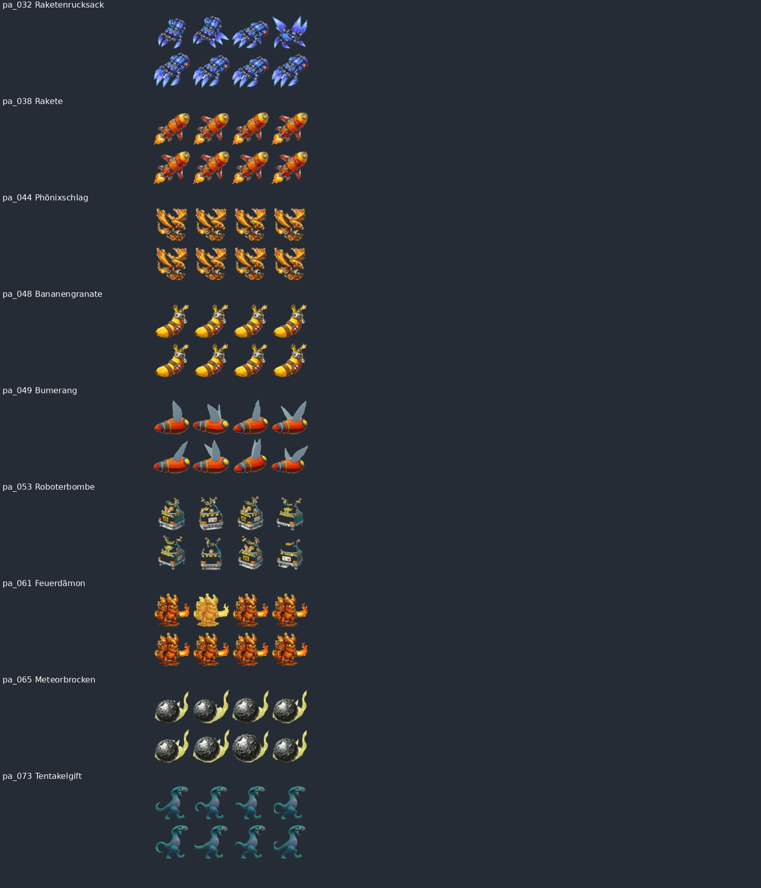
weapon-animations-2
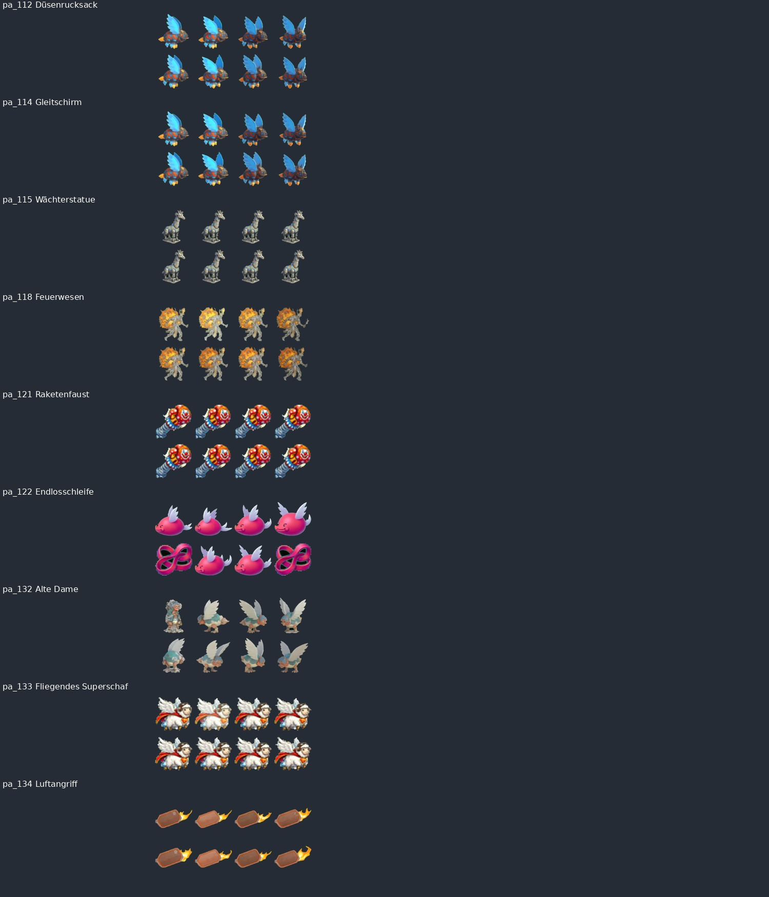
weapon-animations-3
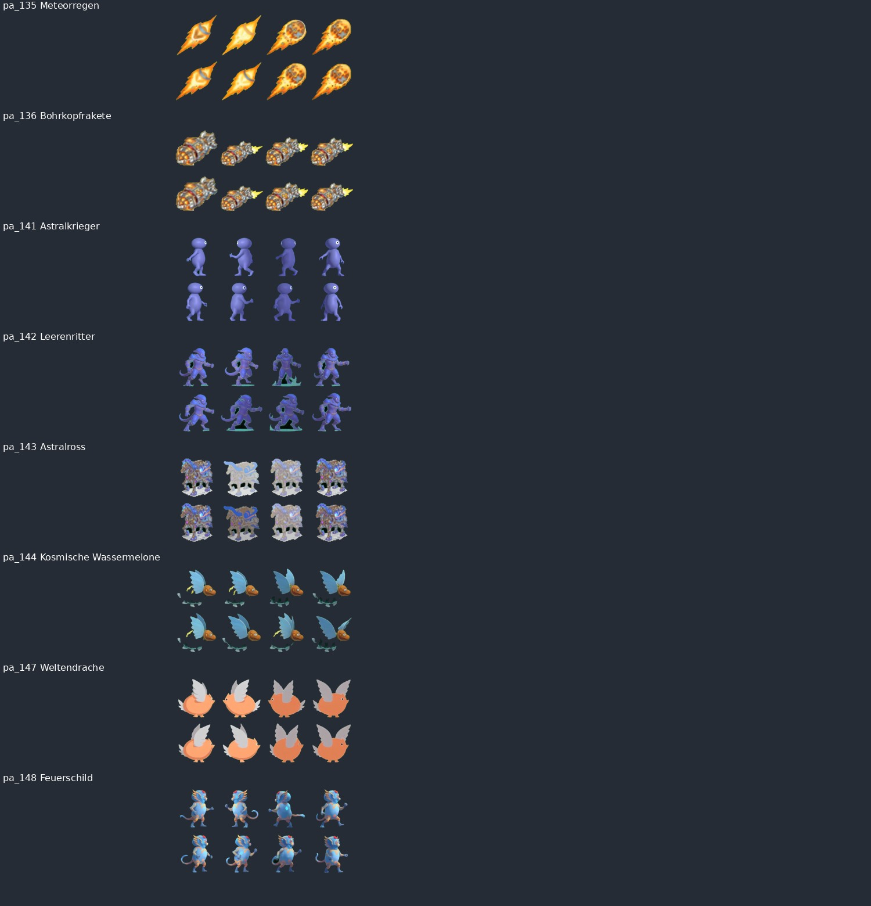
weapons-elemental-1
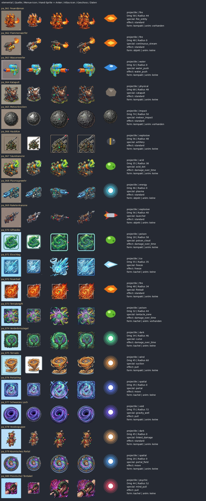
weapons-heavy_ranged-1
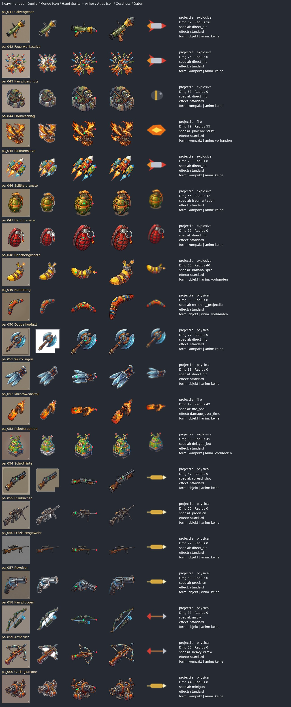
weapons-magic-1
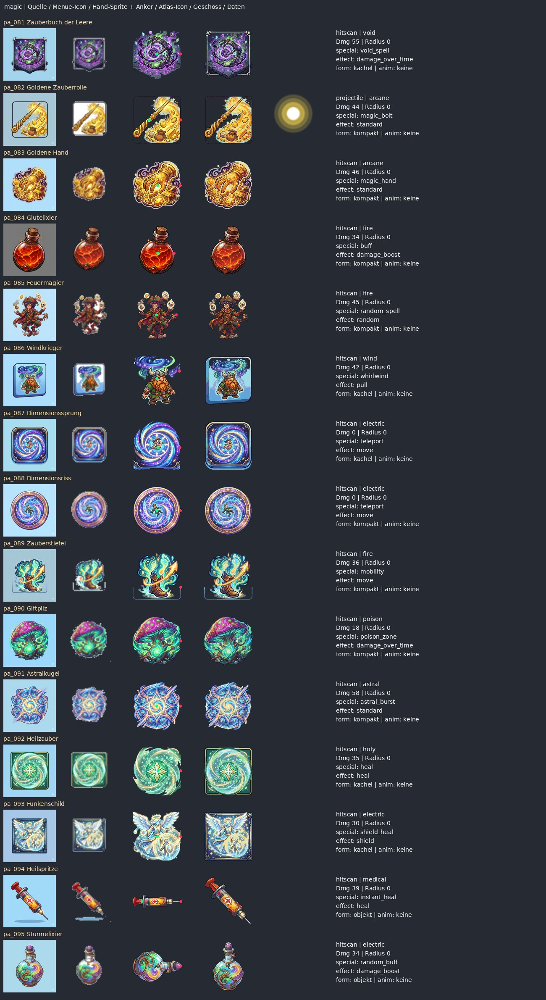
weapons-magic-2
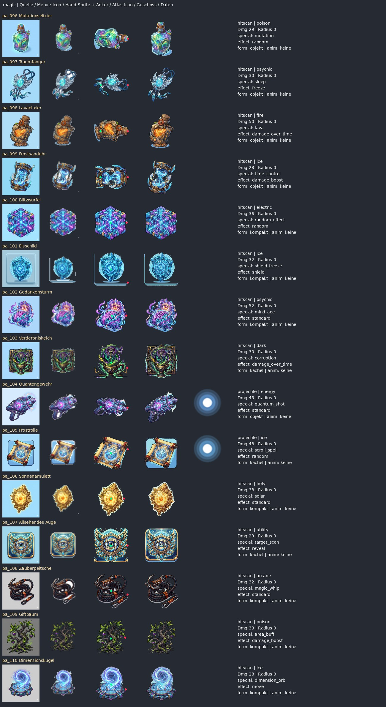
weapons-melee-1
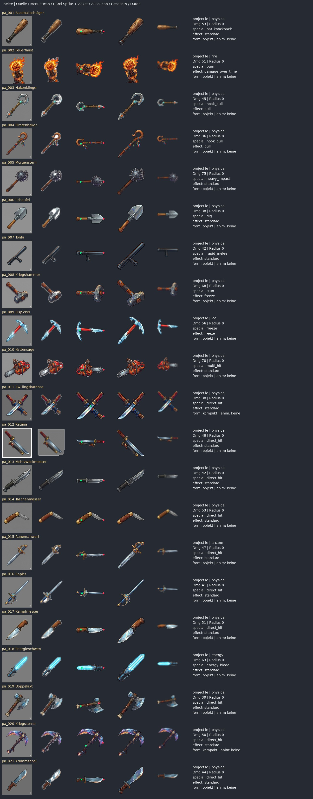
weapons-ranged-1
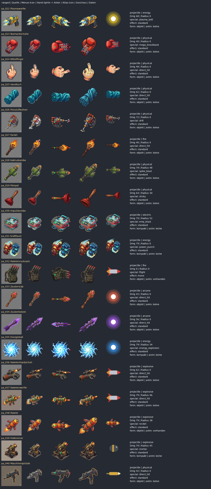
weapons-tech-1
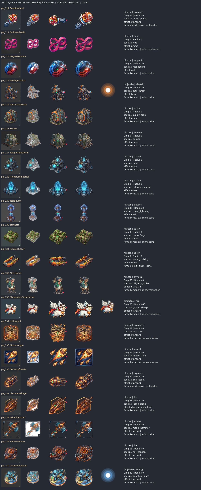
weapons-ultimate-1
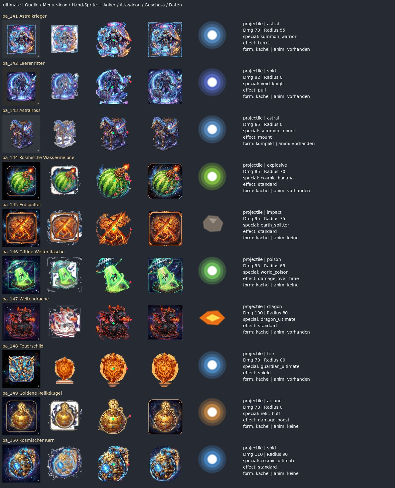
weapons-utility-1
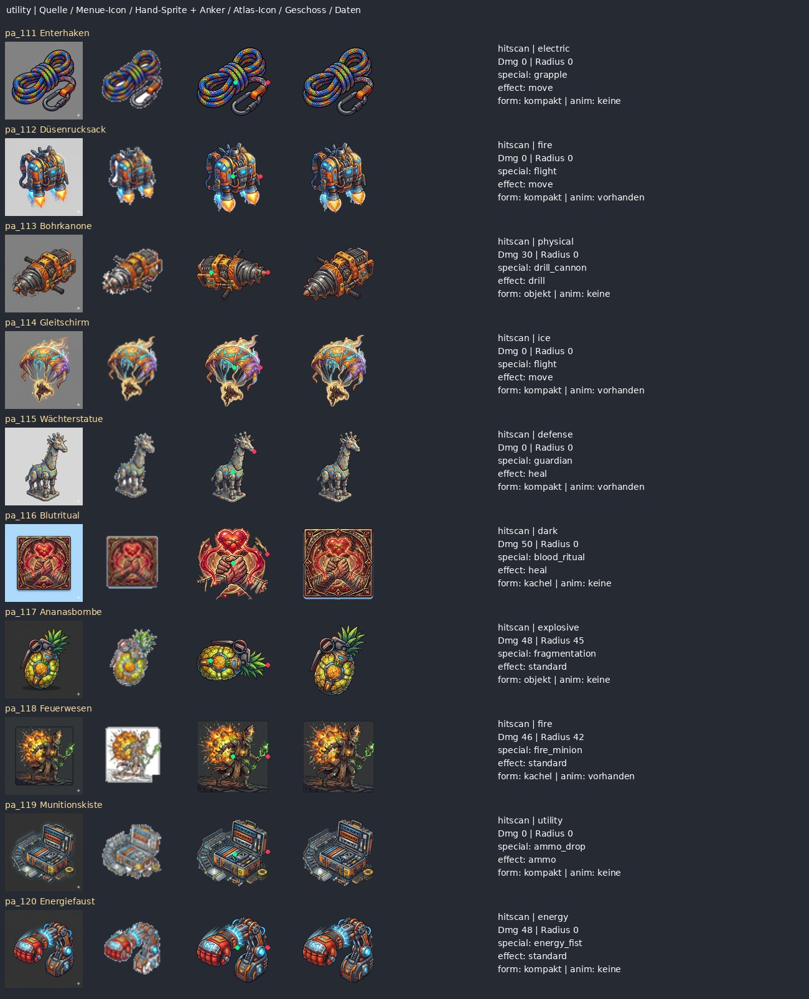
Alle 150 Einzelprüfungen
pa_001 – Baseballschläger
Wuchtiger Schlag auf kurze Distanz mit hohem Schaden.
Baseballschläger klar erkennbar. Im Hand-Sprite liegt der Griffmarker am dicken Schlagkopf und die Wirkspitze am Griffende: semantisch verkehrt ausgerichtet.
Kategorie: melee · Grundwert: 53 · Art: physical · Radius im Katalog: 0 · im Spawn: 0
Effekt: null · Animation: prozedural / kein eigenes Sheet
W02: Schadenswert gegenüber Grundkatalog geändert
pa_002 – Feuerfaust
Brennender Faustschlag auf kurze Distanz, der den Gegner in Brand setzt.
Feuerfaust gut lesbar, aber Glut und Flammen sind fest eingebrannt. Faust/Handgelenk als Körper-/Ausrüstungsrolle festlegen; Icon berührt mehrfach den Rand.
Kategorie: melee · Grundwert: 51 · Art: fire · Radius im Katalog: 0 · im Spawn: 0
Effekt: {"kind": "damage_over_time", "element": "fire", "damagePerTurn": 9, "turns": 3} · Animation: prozedural / kein eigenes Sheet
W02: Schadenswert gegenüber Grundkatalog geändert
pa_003 – Hakenklinge
Kurzer Hieb mit dem Haken, der den getroffenen Gegner ein kurzes Stück heranzieht.
Hakenklinge mit klarer Form. Griffmarker liegt am Haken, der Stiel zeigt zur Wirkspitze: Handanker und Angriffsrichtung korrigieren.
Kategorie: melee · Grundwert: 45 · Art: physical · Radius im Katalog: 0 · im Spawn: 0
Effekt: {"kind": "pull", "distance": 60} · Animation: prozedural / kein eigenes Sheet
W02: Schadenswert gegenüber Grundkatalog geändert
pa_004 – Piratenhaken
Eiserner Haken, der den getroffenen Gegner weit heranzieht, mit Nachladezeit.
Piratenhaken gut individualisiert. Anker sitzt nahe dem Haken statt am unteren Griff; Richtung und Zuganimation auf tatsächlichen Hakenkontakt abstimmen.
Kategorie: melee · Grundwert: 36 · Art: physical · Radius im Katalog: 0 · im Spawn: 0
Effekt: {"kind": "pull", "distance": 150} · Animation: prozedural / kein eigenes Sheet
W02: Schadenswert gegenüber Grundkatalog geändert
pa_005 – Morgenstern
Schwere Stachelkugel für harte Treffer auf kurze Distanz, danach folgt eine Nachladezeit.
Morgenstern klarer Kopf und Schaft. Griff-/Spitzenverteilung wirkt plausibel; kleine Stacheln im 24/40-Pixel-Icon vereinfachen.
Kategorie: melee · Grundwert: 75 · Art: physical · Radius im Katalog: 0 · im Spawn: 0
Effekt: null · Animation: prozedural / kein eigenes Sheet
W02: Schadenswert gegenüber Grundkatalog geändert
pa_006 – Schaufel
Handliche Schaufel für einen Schlag auf kurze Distanz, der auch das Gelände aufreißt.
Schaufel gut erkennbar und im Hand-Sprite passend ausgerichtet. Materialflächen und Blattkante in kleinen Icons bewahren; aktuelle generische Wurfbewegung bleibt eine Designentscheidung.
Kategorie: melee · Grundwert: 38 · Art: physical · Radius im Katalog: 0 · im Spawn: 0
Effekt: null · Animation: prozedural / kein eigenes Sheet
W02: Schadenswert gegenüber Grundkatalog geändert
pa_007 – Tonfa
Handliche Schlagwaffe für Treffer auf kurze Distanz.
Tonfa erkennbar. Der seitliche eigentliche Griff wird vom geometrischen Anker nicht getroffen; gezielten Griffpunkt statt Hauptachsen-Endpunkt setzen.
Kategorie: melee · Grundwert: 42 · Art: physical · Radius im Katalog: 0 · im Spawn: 0
Effekt: null · Animation: prozedural / kein eigenes Sheet
W02: Schadenswert gegenüber Grundkatalog geändert
pa_008 – Kriegshammer
Schwerer Hammer, der den getroffenen Gegner betäubt.
Kriegshammer visuell klar, funktional Betäubung. Eigenen Schlag-/Betäubungsimpuls zeigen statt nur generischem Wurfobjekt.
Kategorie: melee · Grundwert: 68 · Art: physical · Radius im Katalog: 0 · im Spawn: 0
Effekt: {"kind": "freeze", "turns": 1} · Animation: prozedural / kein eigenes Sheet
W02: Schadenswert gegenüber Grundkatalog geändert
pa_009 – Eispickel
Eisiger Hieb, der den getroffenen Gegner einfriert.
Eispickel im Hand-Sprite links mit Hakenkopf, rechts mit Griffende. Griffmarker sitzt kopfnah: Kopf und Griff semantisch ausrichten.
Kategorie: melee · Grundwert: 56 · Art: ice · Radius im Katalog: 0 · im Spawn: 0
Effekt: {"kind": "freeze", "turns": 1} · Animation: prozedural / kein eigenes Sheet
W02: Schadenswert gegenüber Grundkatalog geändert
pa_010 – Kettensäge
Wuchtige Säge für harte Treffer auf kurze Distanz, danach folgt eine Nachladezeit.
Kettensäge klar erkennbar. Feste statische Kette wirkt leblos; Kettenbewegung, Vibrationsprofil und vorderen Kettenkontakt getrennt animieren.
Kategorie: melee · Grundwert: 78 · Art: physical · Radius im Katalog: 0 · im Spawn: 0
Effekt: null · Animation: prozedural / kein eigenes Sheet
W02: Schadenswert gegenüber Grundkatalog geändert
pa_011 – Zwillingskatanas
Zwei Klingen für schnelle Hiebe auf kurze bis mittlere Distanz.
Zwillingskatanas als gekreuztes Icon gut, als gehaltene Waffe unklar. Beide Schwerter getrennt oder eine bewusste Doppelwaffenpose verankern.
Kategorie: melee · Grundwert: 38 · Art: physical · Radius im Katalog: 0 · im Spawn: 0
Effekt: null · Animation: prozedural / kein eigenes Sheet
W02: Schadenswert gegenüber Grundkatalog geändert
pa_012 – Katana
Schlanke Klinge mit weitem, flachem Wurf.
Katana im Hand-Sprite mit Klinge nach links und Heft nach rechts; Anker vertauschen. Menü-Icon enthält zusätzlich einen sichtbaren quadratischen Rand/Hintergrundrest.
Kategorie: melee · Grundwert: 48 · Art: physical · Radius im Katalog: 0 · im Spawn: 0
Effekt: null · Animation: prozedural / kein eigenes Sheet
W02: Schadenswert gegenüber Grundkatalog geändert
pa_013 – Mehrzweckmesser
Vielseitiges Messer für einen sauberen Treffer auf kurze Distanz.
Mehrzweckmesser klarer Griff und Klinge; Hand-Sprite plausibel. Gegen Kampfmesser stärker über Sägezahnprofil und Griffsilhouette unterscheiden.
Kategorie: melee · Grundwert: 42 · Art: physical · Radius im Katalog: 0 · im Spawn: 0
Effekt: null · Animation: prozedural / kein eigenes Sheet
W02: Schadenswert gegenüber Grundkatalog geändert
pa_014 – Taschenmesser
Kleines Klappmesser, das flach und weit fliegt.
Taschenmesser gut lesbar und eigenständig. Die aufgeklappte Form muss in Hand und Wurf konsistent bleiben; keine zusätzliche Nahkampfmechanik aus dem Namen ableiten.
Kategorie: melee · Grundwert: 53 · Art: physical · Radius im Katalog: 0 · im Spawn: 0
Effekt: null · Animation: prozedural / kein eigenes Sheet
W02: Schadenswert gegenüber Grundkatalog geändert
pa_015 – Runenschwert
Schwert mit Runen, dessen Hieb als arkaner Schaden wirkt.
Runenschwert hübsch, aber Klinge im Hand-Sprite links und Griff rechts. Griff-/Wirkspitze korrigieren; Runenglühen als eigenen Effekt führen.
Kategorie: melee · Grundwert: 47 · Art: arcane · Radius im Katalog: 0 · im Spawn: 0
Effekt: null · Animation: prozedural / kein eigenes Sheet
W02: Schadenswert gegenüber Grundkatalog geändert
pa_016 – Rapier
Dünner Degen mit flachem, schnellem Stich auf mittlere Distanz.
Rapier im Hand-Sprite rückwärts zum Ziel. Feine Spitze/Parierstange vereinfachen und echten Heftanker setzen.
Kategorie: melee · Grundwert: 41 · Art: physical · Radius im Katalog: 0 · im Spawn: 0
Effekt: null · Animation: prozedural / kein eigenes Sheet
W02: Schadenswert gegenüber Grundkatalog geändert
pa_017 – Kampfmesser
Robustes Messer für harte Treffer auf kurze Distanz.
Kampfmesser klarer Umriss und grundsätzlich passende Ausrichtung. Die Differenz zu Mehrzweckmesser über Klingenform/Animation stärken.
Kategorie: melee · Grundwert: 51 · Art: physical · Radius im Katalog: 0 · im Spawn: 0
Effekt: null · Animation: prozedural / kein eigenes Sheet
W02: Schadenswert gegenüber Grundkatalog geändert
pa_018 – Energieschwert
Klinge aus gebündelter Energie, die ein Ziel durchschlägt und Schilde schwächt.
Energieschwert im Hand-Sprite mit leuchtender Klinge links und Griff rechts. Drehen/spiegeln und Energieglühen unabhängig vom Körper-Sprite behandeln.
Kategorie: melee · Grundwert: 63 · Art: energy · Radius im Katalog: 0 · im Spawn: 0
Effekt: null · Animation: prozedural / kein eigenes Sheet
W02: Schadenswert gegenüber Grundkatalog geändert
pa_019 – Doppelaxt
Schwere Wurfaxt, die nach dem Aufprall mehrfach abprallt.
Doppelaxt gut erkennbar. Griffanker am Schaft plausibel; die asymmetrischen Köpfe nicht durch geometrische Streckung verfälschen.
Kategorie: melee · Grundwert: 39 · Art: physical · Radius im Katalog: 0 · im Spawn: 0
Effekt: null · Animation: prozedural / kein eigenes Sheet
W02: Schadenswert gegenüber Grundkatalog geändert
pa_020 – Kriegssense
Lange Sense für einen kräftigen Hieb auf kurze Distanz.
Kriegssense bleibt kompakte diagonale Gesamtform statt sauberer Seitenwaffe. Spezifischen Schaftgriff und Sensenbogen vorsehen.
Kategorie: melee · Grundwert: 50 · Art: physical · Radius im Katalog: 0 · im Spawn: 0
Effekt: null · Animation: prozedural / kein eigenes Sheet
W02: Schadenswert gegenüber Grundkatalog geändert
pa_021 – Krummsäbel
Gebogener Säbel, der nach dem Aufprall mehrfach abprallt.
Krummsäbel gut erkennbar, Griff links und Klinge rechts plausibel. Klinge/Parierstange im kleineren HUD-Kontext scharf halten.
Kategorie: melee · Grundwert: 44 · Art: physical · Radius im Katalog: 0 · im Spawn: 0
Effekt: null · Animation: prozedural / kein eigenes Sheet
W02: Schadenswert gegenüber Grundkatalog geändert
pa_022 – Plasmawerfer
Schießt Plasmaschüsse in gerader Linie, trifft weit und braucht freie Sicht.
Plasmawerfer visuell stark. Fest eingebrannter Mündungsblitz sollte separater Effekt sein; generisches gelbes Plasmaprojektil schwächt die cyanfarbene Identität.
Kategorie: ranged · Grundwert: 68 · Art: energy · Radius im Katalog: 0 · im Spawn: 24
Effekt: null · Animation: prozedural / kein eigenes Sheet
W01: Radius 0→24 beim Spawn; W02: Schadenswert gegenüber Grundkatalog geändert
pa_023 – Boxhandschuhe
Boxhandschuhe, die den getroffenen Gegner mit gewaltigem Rückstoß davonschleudern.
Boxhandschuhe werden als einzelner nach rechts gedrehter Handschuh angezeigt; Schlagfläche liegt links, Marker zur Manschette rechts. Körper-/Faustrolle und Richtung korrigieren.
Kategorie: ranged · Grundwert: 40 · Art: physical · Radius im Katalog: 0 · im Spawn: 24
Effekt: null · Animation: prozedural / kein eigenes Sheet
W01: Radius 0→24 beim Spawn; W02: Schadenswert gegenüber Grundkatalog geändert
pa_024 – Mittelfinger
Eine unmissverständliche Geste, die flach und weit zum Gegner fliegt.
Mittelfinger ist ein starkes schwarzhumoriges Icon. Der Hand-Sprite zeigt seitlich statt aufrecht; festlegen, ob Handgeste oder geworfenes Objekt gemeint ist.
Kategorie: ranged · Grundwert: 48 · Art: physical · Radius im Katalog: 0 · im Spawn: 24
Effekt: null · Animation: prozedural / kein eigenes Sheet
W01: Radius 0→24 beim Spawn; W02: Schadenswert gegenüber Grundkatalog geändert
pa_025 – Handtuch
Zusammengerolltes Handtuch, das auf mittlere Distanz klatscht.
Handtuch gut wiedererkennbar und witzig. Als Wurfobjekt plausibel; weiche Peitschen-/Schlagbewegung würde mehr Charakter liefern.
Kategorie: ranged · Grundwert: 62 · Art: physical · Radius im Katalog: 0 · im Spawn: 24
Effekt: null · Animation: prozedural / kein eigenes Sheet
W01: Radius 0→24 beim Spawn; W02: Schadenswert gegenüber Grundkatalog geändert
pa_026 – Pressluftbohrer
Dröhnender Bohrer, der auf mittlere Distanz tief ins Gelände reißt.
Pressluftbohrer klarer Entwurf, aber mit eingebrannten Bodensplittern. Griff und Bohrspitze prüfen, Splitter als Kontakteffekt auslagern.
Kategorie: ranged · Grundwert: 72 · Art: physical · Radius im Katalog: 0 · im Spawn: 24
Effekt: null · Animation: prozedural / kein eigenes Sheet
W01: Radius 0→24 beim Spawn; W02: Schadenswert gegenüber Grundkatalog geändert
pa_027 – Fackel
Brennende Fackel, die den Gegner in Brand setzt.
Fackel klar lesbar. Feuer nicht in starres Handbild einbacken; Flamme und Rauch unabhängig animieren.
Kategorie: ranged · Grundwert: 46 · Art: fire · Radius im Katalog: 0 · im Spawn: 24
Effekt: null · Animation: prozedural / kein eigenes Sheet
W01: Radius 0→24 beim Spawn; W02: Schadenswert gegenüber Grundkatalog geändert
pa_028 – Kaktusbombe
Stachelige Bombe, die nach kurzer Verzögerung im Umkreis zündet.
Kaktusbombe gute ungewöhnliche Silhouette. Spitze/Blüte/Lunte im kleinen Icon separieren, Explosion von eventuell erwarteter Stachelstreuung unterscheiden.
Kategorie: ranged · Grundwert: 79 · Art: physical · Radius im Katalog: 48 · im Spawn: 48
Effekt: null · Animation: prozedural / kein eigenes Sheet
W02: Schadenswert gegenüber Grundkatalog geändert
pa_029 – Pömpel
Wurfgerät mit Zünder, das nach kurzer Verzögerung im Umkreis wirkt.
Pömpel gut erkennbar. Beschreibung ist ein generisches verzögertes Wurfgerät; Klebeverhalten darf aus special=sticky nicht als implementiert versprochen werden.
Kategorie: ranged · Grundwert: 64 · Art: physical · Radius im Katalog: 30 · im Spawn: 30
Effekt: null · Animation: prozedural / kein eigenes Sheet
W02: Schadenswert gegenüber Grundkatalog geändert
pa_030 – Impulsbombe
Elektrische Bombe, die nach kurzer Verzögerung im Umkreis zündet und Schock auslöst.
Impulsbombe technisch klar. Nicht mit der tatsächlichen Mine pa_127 verwechseln; Form/Farbe im Menü stärker unterscheiden.
Kategorie: ranged · Grundwert: 79 · Art: electric · Radius im Katalog: 52 · im Spawn: 52
Effekt: null · Animation: prozedural / kein eigenes Sheet
W02: Schadenswert gegenüber Grundkatalog geändert
pa_031 – Kraftfaust
Gepanzerte Faust, die mit Energie zuschlägt und Schilde schwächt.
Kraftfaust zeigt zwei Fäuste im Icon, aber nur ein generisches geworfenes Gesamtmotiv. Eine eindeutige aktive Faust oder eine bewusste Doppelfaustpose definieren.
Kategorie: ranged · Grundwert: 79 · Art: energy · Radius im Katalog: 0 · im Spawn: 24
Effekt: null · Animation: prozedural / kein eigenes Sheet
W01: Radius 0→24 beim Spawn; W02: Schadenswert gegenüber Grundkatalog geändert
pa_032 – Raketenrucksack
Raketenstoß, der den Schützen weit versetzt, eine Feuerspur auf dem Weg hinterlässt und danach Pause braucht.
Raketenrucksack im Atlas horizontal; der Renderer besitzt bereits eine Hinterkörper-Korrektur. Position in Bewegung im Spiel prüfen. Das Animationsblatt zeigt einen fremden blauen Flugkörper statt des grünen Rucksacks: nicht integrieren.
Kategorie: ranged · Grundwert: 0 · Art: fire · Radius im Katalog: 0 · im Spawn: None
Effekt: {"kind": "move", "distance": 100, "element": "fire", "spur": "weg", "radius": 30} · Animation: vorhanden, nicht geladen
W19: Schadensart gegenüber Grundkatalog geändert; W05/W11: Animationsdatei vorhanden, im Produkt nicht geladen
pa_033 – Zauberstab
Geworfener Stab voller arkaner Kraft, der den Gegner zurückstößt.
Zauberstab ist lesbar, Mündungsanker an Kristallspitze plausibel. Gegen Zauberbolzen durch Stabschaft und anderes Flugmotiv unterscheiden.
Kategorie: ranged · Grundwert: 42 · Art: arcane · Radius im Katalog: 0 · im Spawn: 24
Effekt: null · Animation: prozedural / kein eigenes Sheet
W01: Radius 0→24 beim Spawn; W02: Schadenswert gegenüber Grundkatalog geändert
pa_034 – Zauberbolzen
Schneller Zauberbolzen, der flach und weit fliegt.
Zauberbolzen zeigt im Hand-Sprite die Spitze links, Anker rechts am Schaftende. Richtungszuordnung und Projektilkopf prüfen.
Kategorie: ranged · Grundwert: 56 · Art: arcane · Radius im Katalog: 0 · im Spawn: 24
Effekt: null · Animation: prozedural / kein eigenes Sheet
W01: Radius 0→24 beim Spawn; W02: Schadenswert gegenüber Grundkatalog geändert
pa_035 – Energieball
Kugel aus Energie, die beim Aufprall im Umkreis explodiert.
Energieball als leuchtende Kugel gut lesbar. Eigene Blitzstruktur im Flug erhalten statt austauschbarem Orb; Lichtintensität bei kleinster Darstellung reduzieren.
Kategorie: ranged · Grundwert: 79 · Art: energy · Radius im Katalog: 34 · im Spawn: 34
Effekt: null · Animation: prozedural / kein eigenes Sheet
W02: Schadenswert gegenüber Grundkatalog geändert
pa_036 – Raketenhandschuh
Handschuh mit Raketenantrieb für einen wuchtigen Treffer mit Sprengkraft.
Raketenhandschuh erkennbar, Handanker unter dem Werfer prüfen. Die feste Schussflamme aus dem Ruhe-Sprite entfernen.
Kategorie: ranged · Grundwert: 62 · Art: explosive · Radius im Katalog: 0 · im Spawn: 24
Effekt: null · Animation: prozedural / kein eigenes Sheet
W01: Radius 0→24 beim Spawn; W02: Schadenswert gegenüber Grundkatalog geändert
pa_037 – Raketenwerfer
Schwere Rakete mit großem Explosionsradius, aber wenig Munition.
Raketenwerfer gute Silhouette und richtige Hauptrichtung. Eingebackene Flammen/Rakete vom leeren Werfer trennen; generisches Flugprojektil nur als Basis.
Kategorie: ranged · Grundwert: 79 · Art: explosive · Radius im Katalog: 46 · im Spawn: 46
Effekt: null · Animation: prozedural / kein eigenes Sheet
W02: Schadenswert gegenüber Grundkatalog geändert
pa_038 – Rakete
Rakete, die beim Aufprall im Umkreis explodiert.
Rakete im Hand-Sprite mit rundem Kopf links und Triebwerksflamme rechts; Flugrichtung laut Manifest rechts. Kopf-/Triebwerksachse ist verkehrt. Das separate Animationsblatt ist näher am Original, aber nicht eingebunden.
Kategorie: ranged · Grundwert: 79 · Art: explosive · Radius im Katalog: 38 · im Spawn: 38
Effekt: null · Animation: vorhanden, nicht geladen
W02: Schadenswert gegenüber Grundkatalog geändert; W05/W11: Animationsdatei vorhanden, im Produkt nicht geladen
pa_039 – Feldmörser
Mörser, dessen Granate von oben auf den Zielpunkt niedergeht.
Feldmörser als stehendes Gerät gut, als getragenes Motiv ungewöhnlich. Eigenen Aufstellanker und Rohrmündung definieren.
Kategorie: ranged · Grundwert: 79 · Art: explosive · Radius im Katalog: 45 · im Spawn: 45
Effekt: null · Animation: prozedural / kein eigenes Sheet
W02: Schadenswert gegenüber Grundkatalog geändert
pa_040 – Maschinenpistole
Schnelle Schüsse mit viel Munition für kurze bis mittlere Distanz.
Maschinenpistole zeigt im Hand-Sprite den Lauf nach links, Mündungsmarker nach rechts auf das hintere Ende. Semantische Spiegelung/Anker korrigieren.
Kategorie: ranged · Grundwert: 42 · Art: physical · Radius im Katalog: 0 · im Spawn: 24
Effekt: null · Animation: prozedural / kein eigenes Sheet
W01: Radius 0→24 beim Spawn; W02: Schadenswert gegenüber Grundkatalog geändert
pa_041 – Salvengeber
Kleine Raketen in schneller Folge mit kleinem Explosionsradius.
Salvengeber besitzt klares Rohr und vorn sitzende Ladung. Mechanisch wird nicht allein wegen des Namens eine echte Mehrfachsalve erzeugt; Rückstoß und Anzahl sichtbar mit Mechanik abgleichen.
Kategorie: heavy_ranged · Grundwert: 62 · Art: explosive · Radius im Katalog: 16 · im Spawn: 16
Effekt: null · Animation: prozedural / kein eigenes Sheet
W02: Schadenswert gegenüber Grundkatalog geändert
pa_042 – Feuerwerkssalve
Feuerwerksraketen mit hohem Schaden, wenig Munition und langer Nachladezeit.
Feuerwerkssalve als Icon farbenfroh, in kleiner Größe unruhig. Mehrfachraketenmotiv nicht mit einem einzelnen generischen Raketenprojektil gleichsetzen.
Kategorie: heavy_ranged · Grundwert: 75 · Art: explosive · Radius im Katalog: 0 · im Spawn: 24
Effekt: null · Animation: prozedural / kein eigenes Sheet
W01: Radius 0→24 beim Spawn; W02: Schadenswert gegenüber Grundkatalog geändert
pa_043 – Kampfgeschütz
Schweres Geschütz mit weiter Schussbahn und wenig Munition.
Kampfgeschütz zeigt einen Soldaten im befestigten Sitz statt eine isolierte Waffe. Maschinenkörper, Bediener und Aufstell-/Handrolle trennen; aktuelle Funktion ist kein aufgestelltes Wachgeschütz.
Kategorie: heavy_ranged · Grundwert: 65 · Art: explosive · Radius im Katalog: 0 · im Spawn: 24
Effekt: null · Animation: prozedural / kein eigenes Sheet
W01: Radius 0→24 beim Spawn; W02: Schadenswert gegenüber Grundkatalog geändert
pa_044 – Phönixschlag
Feuervogel, der sein Ziel verfolgt und im Umkreis in Flammen aufgeht.
Phönixschlag hat eigene Flügel-/Feueridentität, das Animationsblatt bleibt überwiegend referenznah. Flugbild derzeit generischer Feuerdiamant; erst nach Bewegungsprüfung passende Phönixanimation anbinden.
Kategorie: heavy_ranged · Grundwert: 79 · Art: fire · Radius im Katalog: 55 · im Spawn: 55
Effekt: null · Animation: vorhanden, nicht geladen
W02: Schadenswert gegenüber Grundkatalog geändert; W05/W11: Animationsdatei vorhanden, im Produkt nicht geladen
pa_045 – Raketensalve
Rakete mit hohem Schaden, aber wenig Munition und langer Nachladezeit.
Raketensalve zeigt drei Raketen im Icon, aber ein Standardprojektil im Atlas. Reale Salvenmechanik oder rein symbolische Darstellung ausdrücklich unterscheiden.
Kategorie: heavy_ranged · Grundwert: 73 · Art: explosive · Radius im Katalog: 0 · im Spawn: 24
Effekt: null · Animation: prozedural / kein eigenes Sheet
W01: Radius 0→24 beim Spawn; W02: Schadenswert gegenüber Grundkatalog geändert
pa_046 – Splittergranate
Granate mit Zünder, die im Umkreis explodiert und Splitterlöcher ins Gelände reißt.
Splittergranate gut erkennbar. Streu-Gruppenmarker suggeriert Splitterprojektile, während der geprüfte Schuss nur ein Projektil erzeugt; Effektvertrag prüfen.
Kategorie: heavy_ranged · Grundwert: 55 · Art: explosive · Radius im Katalog: 42 · im Spawn: 42
Effekt: null · Animation: prozedural / kein eigenes Sheet
W02: Schadenswert gegenüber Grundkatalog geändert; W10: Cluster-Marker ohne nachgewiesene Split-Mechanik
pa_047 – Handgranate
Wurfgranate mit Zünder, die nach dem ersten Aufprall liegen bleibt, bevor sie zündet.
Handgranate klare rote Silhouette. Trotz ausgewiesenem Radius 0 wird aktuell Radius 24 gespawnt; beim Asset nicht durch optische Explosion eine widersprüchliche Mechanik kaschieren.
Kategorie: heavy_ranged · Grundwert: 79 · Art: explosive · Radius im Katalog: 0 · im Spawn: 24
Effekt: null · Animation: prozedural / kein eigenes Sheet
W01: Radius 0→24 beim Spawn; W02: Schadenswert gegenüber Grundkatalog geändert
pa_048 – Bananengranate
Bananenförmige Granate, die nach dem Aufprall mit Verzögerung zündet.
Bananengranate witzig und lesbar. Handbild zeigt Körper links/Lunte rechts; kein gerichteter Lauf nötig. Das Animationsblatt ist überwiegend passend, echte Splittermechanik jedoch nicht allein durch banana_split belegt.
Kategorie: heavy_ranged · Grundwert: 60 · Art: explosive · Radius im Katalog: 40 · im Spawn: 40
Effekt: null · Animation: vorhanden, nicht geladen
W02: Schadenswert gegenüber Grundkatalog geändert; W05/W11: Animationsdatei vorhanden, im Produkt nicht geladen; W10: Cluster-Marker ohne nachgewiesene Split-Mechanik
pa_049 – Bumerang
Gebogenes Wurfholz für einen Treffer auf mittlere Distanz.
Bumerang hat passende Grundform; Animationsblatt wird dagegen zu einem fliegenden Insekt/Raketentier. Keine gezielte Rückkehrlogik im geprüften Motorpfad gefunden; Rückkehr als Designwunsch behandeln.
Kategorie: heavy_ranged · Grundwert: 39 · Art: physical · Radius im Katalog: 0 · im Spawn: 24
Effekt: null · Animation: vorhanden, nicht geladen
W01: Radius 0→24 beim Spawn; W02: Schadenswert gegenüber Grundkatalog geändert; W05/W11: Animationsdatei vorhanden, im Produkt nicht geladen
pa_050 – Doppelkopfaxt
Schwere Wurfaxt mit zwei Köpfen und hohem Schaden.
Doppelkopfaxt hat deutlichen weißen Hintergrund im Menü-Icon; freistellen. Handanker auf dem Axtkopf statt auf dem unteren Schaft wirkt falsch.
Kategorie: heavy_ranged · Grundwert: 77 · Art: physical · Radius im Katalog: 0 · im Spawn: 24
Effekt: null · Animation: prozedural / kein eigenes Sheet
W01: Radius 0→24 beim Spawn; W02: Schadenswert gegenüber Grundkatalog geändert
pa_051 – Wurfklingen
Flache Wurfklingen, die schnell und weit fliegen.
Wurfklingen im Hand-Sprite zeigen Spitzen links und Griffwicklungen rechts; Achse ist zum Ziel verkehrt. Bündel und einzelne fliegende Klinge getrennt aufbereiten.
Kategorie: heavy_ranged · Grundwert: 68 · Art: physical · Radius im Katalog: 0 · im Spawn: 24
Effekt: null · Animation: prozedural / kein eigenes Sheet
W01: Radius 0→24 beim Spawn; W02: Schadenswert gegenüber Grundkatalog geändert
pa_052 – Molotowcocktail
Brandflasche, die nach kurzer Verzögerung zündet und im Umkreis in Brand setzt.
Molotowcocktail klar. Flasche, Stofflunte und Flamme trennen; Flamme nicht als vermeintliche feste Mündung benutzen.
Kategorie: heavy_ranged · Grundwert: 47 · Art: fire · Radius im Katalog: 42 · im Spawn: 42
Effekt: {"kind": "damage_over_time", "element": "fire", "damagePerTurn": 16, "turns": 3} · Animation: prozedural / kein eigenes Sheet
W02: Schadenswert gegenüber Grundkatalog geändert
pa_053 – Roboterbombe
Bombe in Form eines kleinen Roboters, die nach kurzer Verzögerung explodiert.
Roboterbombe starke Figurensilhouette. Animationsblatt reduziert das Modell auf einen anderen kastenförmigen Roboter; Referenzkopf, Körper und Antennen erhalten.
Kategorie: heavy_ranged · Grundwert: 68 · Art: explosive · Radius im Katalog: 45 · im Spawn: 45
Effekt: null · Animation: vorhanden, nicht geladen
W02: Schadenswert gegenüber Grundkatalog geändert; W05/W11: Animationsdatei vorhanden, im Produkt nicht geladen
pa_054 – Schrotflinte
Wuchtiger Schuss auf mittlere Distanz mit anschließender Nachladezeit.
Schrotflinte erkennbar; Menü-Icon trägt eine große Hintergrundfläche. Spread-/Streumarker bedeutet im aktuellen Erstschuss noch keine verifizierte Pelletwolke.
Kategorie: heavy_ranged · Grundwert: 57 · Art: physical · Radius im Katalog: 0 · im Spawn: 24
Effekt: null · Animation: prozedural / kein eigenes Sheet
W01: Radius 0→24 beim Spawn; W02: Schadenswert gegenüber Grundkatalog geändert; W10: Cluster-Marker ohne nachgewiesene Split-Mechanik
pa_055 – Fernbüchse
Präzise Büchse, die ein Ziel durchschlägt, weit reicht und freie Sicht braucht.
Fernbüchse im Hand-Sprite mit Lauf links und hinterem Schaft rechts, Mündungsmarker hinten: Richtung und Griff korrigieren.
Kategorie: heavy_ranged · Grundwert: 55 · Art: physical · Radius im Katalog: 0 · im Spawn: 24
Effekt: null · Animation: prozedural / kein eigenes Sheet
W01: Radius 0→24 beim Spawn; W02: Schadenswert gegenüber Grundkatalog geändert
pa_056 – Präzisionsgewehr
Einzelner, harter Schuss auf große Distanz mit sehr wenig Munition.
Präzisionsgewehr gut erkennbar, aber sehr dünn. Schaftgriff statt geometrischem Linkspunkt verankern; Fernbüchse durch eigene Optik/Schusscharakter unterscheiden.
Kategorie: heavy_ranged · Grundwert: 72 · Art: physical · Radius im Katalog: 0 · im Spawn: 24
Effekt: null · Animation: prozedural / kein eigenes Sheet
W01: Radius 0→24 beim Spawn; W02: Schadenswert gegenüber Grundkatalog geändert
pa_057 – Revolver
Handfeuerwaffe für gezielte Schüsse, die freie Sicht braucht.
Revolver klare Form und plausibler Lauf nach rechts. Geometrischer Griffpunkt liegt zu hoch nahe Trommel statt am tatsächlichen Griff: kontrollieren.
Kategorie: heavy_ranged · Grundwert: 49 · Art: physical · Radius im Katalog: 0 · im Spawn: 24
Effekt: null · Animation: prozedural / kein eigenes Sheet
W01: Radius 0→24 beim Spawn; W02: Schadenswert gegenüber Grundkatalog geändert
pa_058 – Kampfbogen
Bogen für gezielte Pfeile, der freie Sicht braucht.
Kampfbogen schöne Form, aber Schussachse/Sehnenmitte braucht semantische Abnahme. Pfeil separat aus Sehnenkontakt starten lassen.
Kategorie: heavy_ranged · Grundwert: 55 · Art: physical · Radius im Katalog: 0 · im Spawn: 24
Effekt: null · Animation: prozedural / kein eigenes Sheet
W01: Radius 0→24 beim Spawn; W02: Schadenswert gegenüber Grundkatalog geändert
pa_059 – Armbrust
Armbrust mit harten Bolzen, die ein Ziel durchschlagen und freie Sicht brauchen.
Armbrust im Hand-Sprite räumlich schräg und nicht rein seitlich. Bolzenrinne, Griff und Auslass gezielt markieren.
Kategorie: heavy_ranged · Grundwert: 53 · Art: physical · Radius im Katalog: 0 · im Spawn: 24
Effekt: null · Animation: prozedural / kein eigenes Sheet
W01: Radius 0→24 beim Spawn; W02: Schadenswert gegenüber Grundkatalog geändert
pa_060 – Gatlingkanone
Drehlaufgeschütz mit großer Reichweite.
Gatlingkanone klarer Mehrlaufkopf. Laufrotation und echte Schussfolge sollten zusammenpassen; statischer Mehrlaufkopf allein erzeugt keine Schnellfeuermechanik.
Kategorie: heavy_ranged · Grundwert: 44 · Art: physical · Radius im Katalog: 0 · im Spawn: 24
Effekt: null · Animation: prozedural / kein eigenes Sheet
W01: Radius 0→24 beim Spawn; W02: Schadenswert gegenüber Grundkatalog geändert
pa_061 – Feuerdämon
Feuerdämon, der im Umkreis wütet und in Brand setzt.
Feuerdämon wird als gehaltenes Wesen gezeichnet. Animationsblatt zeigt überwiegend denselben Dämon mit einzelnen starken Farbwechseln; Begleiter-/Beschwörungsrolle bewusst festlegen.
Kategorie: elemental · Grundwert: 58 · Art: fire · Radius im Katalog: 44 · im Spawn: 44
Effekt: null · Animation: vorhanden, nicht geladen
W05/W11: Animationsdatei vorhanden, im Produkt nicht geladen
pa_062 – Flammenwerfer
Feuerstrahl auf mittlere Distanz, der den Gegner in Brand setzt.
Flammenwerfer gut erkennbar, jedoch Flamme fest eingebrannt. Feuerstrahl, Brennstatus und tatsächliche zeitliche Schusswirkung sind getrennte Aufgaben.
Kategorie: elemental · Grundwert: 48 · Art: fire · Radius im Katalog: 0 · im Spawn: 24
Effekt: null · Animation: prozedural / kein eigenes Sheet
W01: Radius 0→24 beim Spawn
pa_063 – Wasserwerfer
Wasserstoß, der den Gegner wegdrückt und nass macht.
Wasserwerfer richtige Richtung und klare Farbkennung. Der Tank-/Griffanker wirkt am hinteren Tank; echte Handposition kontrollieren. Versteckten Radius 24 beachten.
Kategorie: elemental · Grundwert: 32 · Art: water · Radius im Katalog: 0 · im Spawn: 24
Effekt: {"kind": "water_push", "distance": 120, "raise": 0.4} · Animation: prozedural / kein eigenes Sheet
W01: Radius 0→24 beim Spawn
pa_064 – Katapult
Schleudert einen schweren Brocken, der im großen Umkreis einschlägt.
Katapult als komplettes Objekt samt Felsen und Figur zu detailliert für ein Hand-Sprite. Aufstellobjekt/Bediener/Stein trennen.
Kategorie: elemental · Grundwert: 68 · Art: physical · Radius im Katalog: 48 · im Spawn: 48
Effekt: null · Animation: prozedural / kein eigenes Sheet
pa_065 – Meteorbrocken
Brocken, der von oben einschlägt und das Gelände aufreißt.
Meteorbrocken als Stein erkennbar; animierter gelber Schweif ist stark vereinfacht und wirkt angeklebt. Rotation/Glut als kontrollierte Effekte statt Formwechsel.
Kategorie: elemental · Grundwert: 74 · Art: impact · Radius im Katalog: 50 · im Spawn: 50
Effekt: null · Animation: vorhanden, nicht geladen
W05/W11: Animationsdatei vorhanden, im Produkt nicht geladen
pa_066 – Haubitze
Schwere Artillerie, deren Granate von oben auf den Zielpunkt niedergeht.
Haubitze samt Standfuß ist nachvollziehbar; Menü-Icon trägt weißen Hintergrund. Rohrmündung ist oben rechts, Handmarker am Aufbau unten: Aufstellrolle definieren.
Kategorie: elemental · Grundwert: 56 · Art: explosive · Radius im Katalog: 48 · im Spawn: 48
Effekt: null · Animation: prozedural / kein eigenes Sheet
pa_067 – Säurekanone
Verschießt Säure, die im Umkreis die Rüstung zersetzt.
Säurekanone als Kettenfahrzeug gut, als Handgerät schwer zu lesen. Säurewolke separat animieren; eigenes grünes Tropfenprojektil von Gift unterscheiden.
Kategorie: elemental · Grundwert: 35 · Art: acid · Radius im Katalog: 38 · im Spawn: 38
Effekt: {"kind": "damage_over_time", "element": "poison", "damagePerTurn": 14, "turns": 3} · Animation: prozedural / kein eigenes Sheet
pa_068 – Plasmagewehr
Gewehr mit Plasmaladung, die ein Ziel durchschlägt und freie Sicht braucht.
Plasmagewehr zeigt Lauf links, Mündungsmarker rechts hinten. Hand-Sprite horizontal richtig ausrichten; feste blaue Strahlen entfernen.
Kategorie: elemental · Grundwert: 46 · Art: energy · Radius im Katalog: 0 · im Spawn: 24
Effekt: null · Animation: prozedural / kein eigenes Sheet
W01: Radius 0→24 beim Spawn; W02: Schadenswert gegenüber Grundkatalog geändert
pa_069 – Raketenkanone
Kanone für Raketen mit großem Radius und hoher Wirkung.
Raketenkanone zeigt im Hand-Sprite Spitze rechts und Waffe links grundsätzlich plausibel. Handpunkt liegt am hinteren Rohr statt am unteren Griff; feste Rakete/Schussflamme trennen.
Kategorie: elemental · Grundwert: 56 · Art: explosive · Radius im Katalog: 40 · im Spawn: 40
Effekt: null · Animation: prozedural / kein eigenes Sheet
pa_070 – Giftwolke
Giftwolke, die nach kurzer Verzögerung aufgeht und im Umkreis vergiftet.
Giftwolke ist im Menü ein gerahmtes Symbol, in der Hand bleibt ein deutliches Rahmenstück erhalten. Symbol und frei schwebende Wolke als verschiedene Assets führen.
Kategorie: elemental · Grundwert: 18 · Art: poison · Radius im Katalog: 58 · im Spawn: 58
Effekt: {"kind": "damage_over_time", "element": "poison", "damagePerTurn": 23, "turns": 3} · Animation: prozedural / kein eigenes Sheet
pa_071 – Eisschlag
Eisbrocken, der im Umkreis einschlägt, den Gegner verlangsamt und beim zweiten Treffer betäubt.
Eisschlag hat gutes kantiges Eisprofil. Geschoss ist nur generischer Eisdiamant; Eisbruch und Wirbel getrennt darstellen.
Kategorie: elemental · Grundwert: 55 · Art: ice · Radius im Katalog: 35 · im Spawn: 35
Effekt: {"kind": "freeze", "turns": 1} · Animation: prozedural / kein eigenes Sheet
pa_072 – Feuerball
Feuerball, der im Umkreis explodiert und in Brand setzt.
Feuerball trägt in der Hand noch einen quadratischen Bildrahmen. Frei stehenden Feuerkern extrahieren statt das UI-Bild als Waffe zu verwenden.
Kategorie: elemental · Grundwert: 48 · Art: fire · Radius im Katalog: 34 · im Spawn: 34
Effekt: null · Animation: prozedural / kein eigenes Sheet
pa_073 – Tentakelgift
Giftiges Tentakel, das nach kurzer Verzögerung im Umkreis vergiftet.
Tentakelgift als vielarmiges Giftmotiv erkennbar, das Animationsblatt wird zu einem zweibeinigen Dinosaurier. Vollständig neu referenzführen oder nicht verwenden.
Kategorie: elemental · Grundwert: 32 · Art: poison · Radius im Katalog: 44 · im Spawn: 44
Effekt: {"kind": "damage_over_time", "element": "poison", "damagePerTurn": 28, "turns": 3} · Animation: vorhanden, nicht geladen
W05/W11: Animationsdatei vorhanden, im Produkt nicht geladen
pa_074 – Verderbnissiegel
Dunkles Siegel, das im Umkreis Schaden anrichtet und verflucht.
Verderbnissiegel gut als UI-Symbol. Handmotiv braucht klare Glyphen-/Orbkonvention, damit es nicht wie ein tragbares Bildschild wirkt.
Kategorie: elemental · Grundwert: 34 · Art: dark · Radius im Katalog: 46 · im Spawn: 46
Effekt: {"kind": "damage_over_time", "element": "poison", "damagePerTurn": 10, "turns": 3} · Animation: prozedural / kein eigenes Sheet
W02: Schadenswert gegenüber Grundkatalog geändert
pa_075 – Tornado
Wirbelsturm, der Gegner im Umkreis zum Schützen heranzieht.
Tornado im Menü mit weißem Hintergrund und Restplatte. Wirbel als räumlichen Effekt statt statisches aufrechtes Handobjekt vorsehen.
Kategorie: elemental · Grundwert: 45 · Art: wind · Radius im Katalog: 60 · im Spawn: 60
Effekt: {"kind": "pull", "distance": 90} · Animation: prozedural / kein eigenes Sheet
pa_076 – Portalring
Ring, durch den der Schütze an einen anderen Ort springt.
Portalring hat eigenständige Form, aber mehrere Rahmenteile bleiben im Handmotiv. Bewegungswirkung und Orbdarstellung klar trennen.
Kategorie: elemental · Grundwert: 35 · Art: spatial · Radius im Katalog: 0 · im Spawn: None
Effekt: {"kind": "move", "distance": 60} · Animation: prozedural / kein eigenes Sheet
W09/W14: positive Kennzahl trotz Selbstwirkung
pa_077 – Schwarzes Loch
Kollabierender Punkt, der Gegner anzieht und mit schwerem Schaden zerreißt.
Schwarzes Loch sehr gut lesbar. Ruhiges Zentrum erhalten und nur Rand/Verzerrung animieren; nicht mit beliebigem violettem Zauberorb verwechseln.
Kategorie: elemental · Grundwert: 75 · Art: void · Radius im Katalog: 72 · im Spawn: 72
Effekt: {"kind": "pull", "distance": 90} · Animation: prozedural / kein eigenes Sheet
pa_078 – Voodoopuppe
Puppe mit dunkler Kraft, die den Gegner verflucht.
Voodoopuppe einprägsam. linked_damage ist im aktuellen buildEffect kein eigenständiger Effekt; Fluch entsteht über andere Schadens-/Maluspfade, keine Kopplungsmechanik behaupten.
Kategorie: elemental · Grundwert: 45 · Art: dark · Radius im Katalog: 0 · im Spawn: 24
Effekt: null · Animation: prozedural / kein eigenes Sheet
W01: Radius 0→24 beim Spawn
pa_079 – Kosmisches Portal
Kosmisches Tor, durch das der Schütze an einen anderen Ort springt.
Kosmisches Portal visuell komplex und mit kleiner Mittelfigur. Für 24/40 Pixel stark vereinfachen; vom Dimensionsring über klare Kontur unterscheiden.
Kategorie: elemental · Grundwert: 20 · Art: spatial · Radius im Katalog: 0 · im Spawn: None
Effekt: {"kind": "move", "distance": 60} · Animation: prozedural / kein eigenes Sheet
W09/W14: positive Kennzahl trotz Selbstwirkung
pa_080 – Psionischer Tentakel
Geistiger Griff, der Gegner im Umkreis zum Schützen heranzieht.
Psionischer Tentakel zeigt zusätzlich eine menschliche Hand im Motiv. Angeborenes Wesen, Beschwörung und Ausrüstungsgegenstand gestalterisch festlegen; Handbild nicht doppelt am Figurenarm zeichnen.
Kategorie: elemental · Grundwert: 44 · Art: psychic · Radius im Katalog: 52 · im Spawn: 52
Effekt: {"kind": "pull", "distance": 90} · Animation: prozedural / kein eigenes Sheet
pa_081 – Zauberbuch der Leere
Zauberbuch, das die Leere entfesselt: Schaden am getroffenen Gegner und anhaltender Schaden über Zeit.
Zauberbuch der Leere zeigt überwiegend ornamentiertes Siegel statt aufgeschlagenem Buch. Buchform oder ehrlicheren Siegelnamen erwägen; aktuelle IDs beibehalten.
Kategorie: magic · Grundwert: 55 · Art: void · Radius im Katalog: 0 · im Spawn: None
Effekt: {"kind": "damage_over_time", "element": "poison", "damagePerTurn": 8, "turns": 3} · Animation: prozedural / kein eigenes Sheet
pa_082 – Goldene Zauberrolle
Rolle, die einen goldenen Zauberbolzen entsendet und freie Sicht braucht.
Goldene Zauberrolle zeigt im Bild einen goldenen Stab mit Münzen, keine eindeutig erkennbare Rolle. Name und Motiv abgleichen; weißer UI-Hintergrund verstärkt die Unruhe.
Kategorie: magic · Grundwert: 44 · Art: arcane · Radius im Katalog: 0 · im Spawn: 24
Effekt: null · Animation: prozedural / kein eigenes Sheet
W01: Radius 0→24 beim Spawn
pa_083 – Goldene Hand
Goldene Hand, die das Ziel unmittelbar mit arkaner Kraft trifft.
Goldene Hand als goldene Faust gut lesbar. Kontur von Feuerfaust/Kraftfaust durch klare Material- und Gestenform absetzen.
Kategorie: magic · Grundwert: 46 · Art: arcane · Radius im Katalog: 0 · im Spawn: None
Effekt: null · Animation: prozedural / kein eigenes Sheet
pa_084 – Glutelixier
Glutroter Trank, der den eigenen Schaden kurz stark verstärkt und Treffer in Brand setzt.
Glutelixier starkes Flaschenmotiv. Aktuelle Wirkung Feuerverstärkung, Grundkatalog astral: Renderer-/UI-Datenversion beachten, nicht alte Magiefarben übernehmen.
Kategorie: magic · Grundwert: 34 · Art: fire · Radius im Katalog: 0 · im Spawn: None
Effekt: {"kind": "damage_boost", "multiplier": 1.7, "turns": 2, "element": "fire"} · Animation: prozedural / kein eigenes Sheet
W19: Schadensart gegenüber Grundkatalog geändert; W09/W14: positive Kennzahl trotz Selbstwirkung
pa_085 – Feuermagier
Feuerzauber mit zufälliger Wirkung aus dem Angriffspool: Brandverstärkung, Rüstung oder Munition.
Feuermagier als komplette Figur im Hand-Sprite kann mit Spielfiguren verwechselt werden. Besser Beschwörungssymbol oder separates Effektwesen; aktuelle Feuerwirkung aus Versionsschicht übernehmen.
Kategorie: magic · Grundwert: 45 · Art: fire · Radius im Katalog: 0 · im Spawn: None
Effekt: {"kind": "random", "pool": ["damage_boost", "armor", "ammo"], "element": "fire"} · Animation: prozedural / kein eigenes Sheet
W19: Schadensart gegenüber Grundkatalog geändert; W09/W14: positive Kennzahl trotz Selbstwirkung
pa_086 – Windkrieger
Krieger im Wirbelwind, der den getroffenen Gegner zum Schützen heranzieht.
Windkrieger als kleiner Krieger unter Wirbel. Hintergrundreste im Icon/Handmotiv; Beschwörungsrolle und tatsächlicher Zieheffekt verständlich darstellen.
Kategorie: magic · Grundwert: 42 · Art: wind · Radius im Katalog: 0 · im Spawn: None
Effekt: {"kind": "pull", "distance": 90} · Animation: prozedural / kein eigenes Sheet
pa_087 – Dimensionssprung
Sprung durch die Dimension; beim Aufprall zuckt am Zielpunkt ein Blitz.
Dimensionssprung als quadratischer Raumring gut erkennbar. Aktuell elektrische Zusatzwirkung: Versionsdaten in Effektdarstellung übernehmen; Name im Vergleich zu Dimensionsriss begrifflich schärfen.
Kategorie: magic · Grundwert: 0 · Art: electric · Radius im Katalog: 0 · im Spawn: None
Effekt: {"kind": "move", "distance": 80, "element": "electric", "spur": "ziel", "radius": 36} · Animation: prozedural / kein eigenes Sheet
W19: Schadensart gegenüber Grundkatalog geändert
pa_088 – Dimensionsriss
Riss in der Dimension für den weitesten Sprung; am Zielpunkt entlädt sich ein Schock.
Dimensionsriss als runder Raumring ähnelt Dimensionssprung sehr stark. Durch Rissform, Farbe oder Bewegung unterscheidbar machen; keine andere Grundmechanik bloß aus dem Namen ableiten.
Kategorie: magic · Grundwert: 0 · Art: electric · Radius im Katalog: 0 · im Spawn: None
Effekt: {"kind": "move", "distance": 165, "element": "electric", "spur": "ziel", "radius": 52} · Animation: prozedural / kein eigenes Sheet
W19: Schadensart gegenüber Grundkatalog geändert
pa_089 – Zauberstiefel
Verzauberte Stiefel für einen kleinen Sprung mit Feuerspur, dafür jeden Zug.
Zauberstiefel ein gutes Bewegungsicon, aber Restlinien vom Bildrahmen bleiben. Stiefel nicht wie ein gerahmtes Schild vor den Spieler halten.
Kategorie: magic · Grundwert: 36 · Art: fire · Radius im Katalog: 0 · im Spawn: None
Effekt: {"kind": "move", "distance": 40, "element": "fire", "spur": "weg", "radius": 22} · Animation: prozedural / kein eigenes Sheet
W19: Schadensart gegenüber Grundkatalog geändert; W09/W14: positive Kennzahl trotz Selbstwirkung
pa_090 – Giftpilz
Giftiger Pilz, der den getroffenen Gegner vergiftet.
Giftpilz klarer individueller Entwurf. Feinste Fäden bei kleinen Icons vereinfachen; Giftfläche als gesonderten Bodeneffekt ausgeben.
Kategorie: magic · Grundwert: 18 · Art: poison · Radius im Katalog: 0 · im Spawn: None
Effekt: {"kind": "damage_over_time", "element": "poison", "damagePerTurn": 25, "turns": 3} · Animation: prozedural / kein eigenes Sheet
pa_091 – Astralkugel
Kugel aus Astralenergie, die den getroffenen Gegner unmittelbar trifft.
Astralkugel dekorativ, ähnelt vielen Kreisglyphen. Eigenen Kern-/Ringumriss und charakteristische Flug-/Strahlbewegung definieren.
Kategorie: magic · Grundwert: 58 · Art: astral · Radius im Katalog: 0 · im Spawn: None
Effekt: null · Animation: prozedural / kein eigenes Sheet
pa_092 – Heilzauber
Heilt den Schützen ein wenig, wärmt ihn vom Frost frei und ist jeden Zug nutzbar.
Heilzauber als grün-goldenes Siegel lesbar. Menüdetail nennt weiterhin Schaden als Zahl, obwohl die Selbstwirkung heilt; Heilwert und Reinigung separat anzeigen.
Kategorie: magic · Grundwert: 35 · Art: holy · Radius im Katalog: 0 · im Spawn: None
Effekt: {"kind": "heal", "amount": 40, "reinigt": ["frost"]} · Animation: prozedural / kein eigenes Sheet
W09/W14: positive Kennzahl trotz Selbstwirkung
pa_093 – Funkenschild
Schild unter Strom: Wer es trifft, wird geschockt.
Funkenschild zeigt im Original einen goldblauen Engel, die aktuelle Wirkung ist elektrisch. Schildsilhouette in der UI klarer zeigen; Bildfarbe nicht als heilige Wirkung missverstehen.
Kategorie: magic · Grundwert: 30 · Art: electric · Radius im Katalog: 0 · im Spawn: None
Effekt: {"kind": "shield", "amount": 40, "gegen": "electric"} · Animation: prozedural / kein eigenes Sheet
W19: Schadensart gegenüber Grundkatalog geändert; W09/W14: positive Kennzahl trotz Selbstwirkung
pa_094 – Heilspritze
Spritze, die den Schützen kräftig heilt, löst einen Schock und braucht danach Pause.
Heilspritze eindeutig, aber Icon enthält Schatten-/Hintergrundlinie unter der Spritze. Heilwert und Reinigung statt allgemeinem DMG anzeigen.
Kategorie: magic · Grundwert: 39 · Art: medical · Radius im Katalog: 0 · im Spawn: None
Effekt: {"kind": "heal", "amount": 70, "reinigt": ["schock"]} · Animation: prozedural / kein eigenes Sheet
W09/W14: positive Kennzahl trotz Selbstwirkung
pa_095 – Sturmelixier
Geladenes Elixier, das den eigenen Schaden für zwei Züge verstärkt und Treffer schockt.
Sturmelixier wird im Hand-Sprite liegend gezeichnet. Für Trinken/Anwenden aufrechte Flaschenpose statt Waffenmündung verwenden; elektrische Wirkung aus aktueller Fassung lesen.
Kategorie: magic · Grundwert: 34 · Art: electric · Radius im Katalog: 0 · im Spawn: None
Effekt: {"kind": "damage_boost", "multiplier": 1.3, "turns": 3, "element": "electric"} · Animation: prozedural / kein eigenes Sheet
W19: Schadensart gegenüber Grundkatalog geändert; W09/W14: positive Kennzahl trotz Selbstwirkung
pa_096 – Mutationselixier
Elixier mit zufälliger Wirkung aus dem Giftpool: Heilung, Sprung oder Giftverstärkung.
Mutationselixier hat gute Flaschenform, ebenfalls horizontal als Schusswaffe gedreht. Anwenden-/Trinkenpose und sichtbare Gift-/Zufallswirkung getrennt darstellen.
Kategorie: magic · Grundwert: 29 · Art: poison · Radius im Katalog: 0 · im Spawn: None
Effekt: {"kind": "random", "pool": ["heal", "move", "damage_boost"], "element": "poison"} · Animation: prozedural / kein eigenes Sheet
W19: Schadensart gegenüber Grundkatalog geändert; W09/W14: positive Kennzahl trotz Selbstwirkung
pa_097 – Traumfänger
Fängt den Gegner im Traum und lässt ihn einen Zug aussetzen.
Traumfänger wird wie ein horizontaler Stab gedreht. Eigene Hänge-/Schwingpose und Schlafsymbol wären verständlicher als generischer Waffenanker.
Kategorie: magic · Grundwert: 30 · Art: psychic · Radius im Katalog: 0 · im Spawn: None
Effekt: {"kind": "freeze", "turns": 1} · Animation: prozedural / kein eigenes Sheet
pa_098 – Lavaelixier
Flüssige Lava, die den getroffenen Gegner in Brand setzt und Schaden über Zeit anrichtet.
Lavaelixier klare grobe Flasche. Im Handbild seitlich ausgerichtet; Flaschen-/Anwendungsrolle statt Lauf/Mündung verwenden.
Kategorie: magic · Grundwert: 50 · Art: fire · Radius im Katalog: 0 · im Spawn: None
Effekt: {"kind": "damage_over_time", "element": "fire", "damagePerTurn": 23, "turns": 3} · Animation: prozedural / kein eigenes Sheet
pa_099 – Frostsanduhr
Sanduhr aus Eis, die den eigenen Schaden mehrere Züge lang leicht verstärkt und mit Frost bremst.
Frostsanduhr gutes Zeit-/Eismotiv. Horizontale Ausrichtung erschwert Lesen; aufrechte Glyphenpose und tatsächlichen Frost-Buff statt behaupteter Zeitmanipulation zeigen.
Kategorie: magic · Grundwert: 28 · Art: ice · Radius im Katalog: 0 · im Spawn: None
Effekt: {"kind": "damage_boost", "multiplier": 1.2, "turns": 4, "element": "ice"} · Animation: prozedural / kein eigenes Sheet
W19: Schadensart gegenüber Grundkatalog geändert; W09/W14: positive Kennzahl trotz Selbstwirkung
pa_100 – Blitzwürfel
Würfel mit zufälliger Wirkung aus dem Tempopool: Schockverstärkung, Sprung oder Munition.
Blitzwürfel klarer Würfel mit leuchtenden Kanten. Im Detail zu viel Neon; Zufalls-/Blitzfunktion durch Symbol und Kurztext statt nur Farbigkeit unterscheiden.
Kategorie: magic · Grundwert: 36 · Art: electric · Radius im Katalog: 0 · im Spawn: None
Effekt: {"kind": "random", "pool": ["damage_boost", "move", "ammo"], "element": "electric"} · Animation: prozedural / kein eigenes Sheet
W19: Schadensart gegenüber Grundkatalog geändert; W09/W14: positive Kennzahl trotz Selbstwirkung
pa_101 – Eisschild
Dickes Schild aus Eis: Wer es trifft, wird mit Frost gebremst.
Eisschild gut erkennbar, trägt aber Sockel-/Rahmenreste in Icon und Handbild. Schildrolle ohne Bodenplatte; Schutzwert und Reaktion auf Angreifer anzeigen.
Kategorie: magic · Grundwert: 32 · Art: ice · Radius im Katalog: 0 · im Spawn: None
Effekt: {"kind": "shield", "amount": 55, "gegen": "ice"} · Animation: prozedural / kein eigenes Sheet
W09/W14: positive Kennzahl trotz Selbstwirkung
pa_102 – Gedankensturm
Mentaler Sturm, der dem getroffenen Gegner unmittelbar Schaden anrichtet.
Gedankensturm schönes Auge/Tentakelmotiv. In kleinsten Größen visuell überladen; zentrale Augenform priorisieren.
Kategorie: magic · Grundwert: 52 · Art: psychic · Radius im Katalog: 0 · im Spawn: None
Effekt: null · Animation: prozedural / kein eigenes Sheet
pa_103 – Verderbniskelch
Kelch, dessen Verderbnis dem getroffenen Gegner Schaden über Zeit anrichtet und ihn verflucht.
Verderbniskelch im Handmotiv mit Rahmenteilen. Kelch als echtes Objekt extrahieren; dunkle Aura separat animieren.
Kategorie: magic · Grundwert: 30 · Art: dark · Radius im Katalog: 0 · im Spawn: None
Effekt: {"kind": "damage_over_time", "element": "poison", "damagePerTurn": 15, "turns": 3} · Animation: prozedural / kein eigenes Sheet
pa_104 – Quantengewehr
Gewehr mit Energiestrahl, der ein Ziel durchschlägt und freie Sicht braucht.
Quantengewehr bleibt räumlich gedreht, Mündungsrichtung nicht sauber zur Hauptachse. Griff/Lauf nach manueller Abnahme festlegen und feste Quanteneffekte abtrennen.
Kategorie: magic · Grundwert: 45 · Art: energy · Radius im Katalog: 0 · im Spawn: 24
Effekt: null · Animation: prozedural / kein eigenes Sheet
W01: Radius 0→24 beim Spawn
pa_105 – Frostrolle
Rolle mit zufälligem Eiszauber aus dem Schutzpool: Eisschild, Heilung oder Rüstung.
Frostrolle klarer Schriftrollenentwurf, aber Rahmenreste verbleiben. Symbol/UI-Rolle von der in der Hand entrollten Rolle trennen; aktuelle Eiswirkung lesen.
Kategorie: magic · Grundwert: 48 · Art: ice · Radius im Katalog: 0 · im Spawn: None
Effekt: {"kind": "random", "pool": ["shield", "heal", "armor"], "element": "ice"} · Animation: prozedural / kein eigenes Sheet
W19: Schadensart gegenüber Grundkatalog geändert; W09/W14: positive Kennzahl trotz Selbstwirkung
pa_106 – Sonnenamulett
Amulett, das Sonnenlicht bündelt, den Gegner in Brand setzt und Verfluchte härter trifft.
Sonnenamulett hat klare Sonnenform. Im kleinsten Icon Ornamente reduzieren; Eigenidentität gegenüber Goldener Reliktkugel erhalten.
Kategorie: magic · Grundwert: 38 · Art: holy · Radius im Katalog: 0 · im Spawn: None
Effekt: null · Animation: prozedural / kein eigenes Sheet
pa_107 – Allsehendes Auge
Späht das Feld aus: Der Schütze gilt für einige Züge als aufgedeckt.
Allsehendes Auge visuell passend zur Aufdeckung, mit deutlich erhaltenen Rahmenresten. UI-Symbol und schwebender Aufklärungseffekt getrennt aufbereiten.
Kategorie: magic · Grundwert: 29 · Art: utility · Radius im Katalog: 0 · im Spawn: None
Effekt: {"kind": "reveal", "turns": 2} · Animation: prozedural / kein eigenes Sheet
W09/W14: positive Kennzahl trotz Selbstwirkung
pa_108 – Zauberpeitsche
Peitsche aus arkaner Kraft, die unmittelbar trifft und freie Sicht braucht.
Zauberpeitsche zeigt ein aufgerolltes Seil, kaum lesbare aktive Spitze. Gehaltenen Griff, ausgezogene Peitsche und magischen Strahl als getrennte Zustände darstellen.
Kategorie: magic · Grundwert: 32 · Art: arcane · Radius im Katalog: 0 · im Spawn: None
Effekt: null · Animation: prozedural / kein eigenes Sheet
pa_109 – Giftbaum
Giftiger Baum, der den eigenen Schaden lange, aber schwach verstärkt und Treffer vergiftet.
Giftbaum als vollständiger Baum kann Landschaft statt Waffe suggerieren. Buff-/Beschwörungsrolle erklären und Boden-/Pflanzenteile vom Handmotiv trennen.
Kategorie: magic · Grundwert: 33 · Art: poison · Radius im Katalog: 0 · im Spawn: None
Effekt: {"kind": "damage_boost", "multiplier": 1.15, "turns": 5, "element": "poison"} · Animation: prozedural / kein eigenes Sheet
W19: Schadensart gegenüber Grundkatalog geändert; W09/W14: positive Kennzahl trotz Selbstwirkung
pa_110 – Dimensionskugel
Kugel, die den Schützen durch die Dimension versetzt; am Landepunkt gefriert der Boden.
Dimensionskugel ist im Spiel Eisbewegung. Motiv mit Portaltechnik ist brauchbar, doch aktuelle Elementfarbe und UI-Nutzen aus Versionsdaten ableiten.
Kategorie: magic · Grundwert: 28 · Art: ice · Radius im Katalog: 0 · im Spawn: None
Effekt: {"kind": "move", "distance": 110, "element": "ice", "spur": "ziel", "radius": 40} · Animation: prozedural / kein eigenes Sheet
W19: Schadensart gegenüber Grundkatalog geändert; W09/W14: positive Kennzahl trotz Selbstwirkung
pa_111 – Enterhaken
Haken, mit dem sich der Schütze ein Stück versetzt; beim Einschlag schockt er alle am Zielpunkt.
Enterhaken-Icon zeigt überwiegend ein Seilknäuel mit Karabiner. Hakenkopf als Hauptsilhouette ergänzen; vom separaten Ninja-Seil-Werkzeug unterscheiden.
Kategorie: utility · Grundwert: 0 · Art: electric · Radius im Katalog: 0 · im Spawn: None
Effekt: {"kind": "move", "distance": 45, "element": "electric", "spur": "ziel", "radius": 30} · Animation: prozedural / kein eigenes Sheet
W19: Schadensart gegenüber Grundkatalog geändert
pa_112 – Düsenrucksack
Düsenantrieb, der den Schützen ein mittleres Stück versetzt; das Abgas setzt am Startpunkt alles in Brand.
Düsenrucksack ist eindeutig; der Renderer besitzt bereits eine Rücken-Korrektur. Das Animationsblatt zeigt ein fremdes geflügeltes Fluggerät und ist exakt identisch mit Gleitschirm: nicht verwenden.
Kategorie: utility · Grundwert: 0 · Art: fire · Radius im Katalog: 0 · im Spawn: None
Effekt: {"kind": "move", "distance": 70, "element": "fire", "spur": "start", "radius": 36} · Animation: vorhanden, nicht geladen
W19: Schadensart gegenüber Grundkatalog geändert; W05/W11: Animationsdatei vorhanden, im Produkt nicht geladen
pa_113 – Bohrkanone
Bohrstrahl von der Seite, der einen Tunnel durchs Gelände gräbt.
Bohrkanone guter Bohrkopf. Gehaltene Richtung plausibel; Griffpunkt und Tunnelanfang kontrollieren, klar von Bohrkopfrakete unterscheiden.
Kategorie: utility · Grundwert: 30 · Art: physical · Radius im Katalog: 0 · im Spawn: None
Effekt: {"kind": "drill", "entryRadius": 30, "radius": 14, "steps": 12} · Animation: prozedural / kein eigenes Sheet
pa_114 – Gleitschirm
Schirm, der den Schützen am weitesten versetzt; am Landepunkt gefriert der Boden, mit Nachladezeit.
Gleitschirm als Schirm lesbar. Animationsblatt ist bytegleich zum Düsenrucksack und zeigt keinen Schirm; neues Referenzblatt nötig.
Kategorie: utility · Grundwert: 0 · Art: ice · Radius im Katalog: 0 · im Spawn: None
Effekt: {"kind": "move", "distance": 160, "element": "ice", "spur": "ziel", "radius": 56} · Animation: vorhanden, nicht geladen
W19: Schadensart gegenüber Grundkatalog geändert; W05/W11: Animationsdatei vorhanden, im Produkt nicht geladen
pa_115 – Wächterstatue
Statue, die den Schützen heilt.
Wächterstatue als Giraffenstatue eigenständig und humorvoll. Aktuelle Funktion ist Heilung; Wirkung oder Bezeichnung verständlich verbinden. Animation referenznah, aber wenig echte Bewegung.
Kategorie: utility · Grundwert: 0 · Art: defense · Radius im Katalog: 0 · im Spawn: None
Effekt: {"kind": "heal", "amount": 35} · Animation: vorhanden, nicht geladen
W05/W11: Animationsdatei vorhanden, im Produkt nicht geladen
pa_116 – Blutritual
Dunkles Ritual, das den Schützen heilt.
Blutritual als gerahmtes Handsymbol, Handbild bereits besser freigestellt. Tatsächliche Heilung kenntlich machen, keine ungeprüfte Opfer-/Lebensdiebstahlmechanik versprechen.
Kategorie: utility · Grundwert: 50 · Art: dark · Radius im Katalog: 0 · im Spawn: None
Effekt: {"kind": "heal", "amount": 60} · Animation: prozedural / kein eigenes Sheet
W09/W14: positive Kennzahl trotz Selbstwirkung
pa_117 – Ananasbombe
Ananasförmige Granate, die das getroffene Ziel unmittelbar sprengt.
Ananasbombe gute ausgefallene Granatensilhouette. Richtungs-/Handrolle für Wurfobjekt prüfen; der special-Name fragmentation ist kein Nachweis realer Splittergeschosse.
Kategorie: utility · Grundwert: 48 · Art: explosive · Radius im Katalog: 45 · im Spawn: None
Effekt: null · Animation: prozedural / kein eigenes Sheet
pa_118 – Feuerwesen
Feuerwesen, das den getroffenen Gegner in Brand setzt.
Feuerwesen wirkt als vollständiger Kämpfer mit Bodenplatte. Menü-Icon mit weißem Resthintergrund; Animationsblatt verändert Material und Körperform stark.
Kategorie: utility · Grundwert: 46 · Art: fire · Radius im Katalog: 42 · im Spawn: None
Effekt: null · Animation: vorhanden, nicht geladen
W05/W11: Animationsdatei vorhanden, im Produkt nicht geladen
pa_119 – Munitionskiste
Kiste, die die Munition des Schützen auffüllt.
Munitionskiste als geöffnete Kiste gut erkennbar. Als Selbstwirkung Gegenstand/Anwendungsanimation vorsehen; große Detailfülle im HUD reduzieren.
Kategorie: utility · Grundwert: 0 · Art: utility · Radius im Katalog: 0 · im Spawn: None
Effekt: {"kind": "ammo", "amount": 2} · Animation: prozedural / kein eigenes Sheet
pa_120 – Energiefaust
Energiestoß, der unmittelbar trifft, Schilde schwächt und freie Sicht braucht.
Energiefaust gut lesbar und individuell. Handmotiv zeigt Faust links, der Wirkmarker liegt rechts am Anbau: Angriffsseite semantisch prüfen.
Kategorie: utility · Grundwert: 48 · Art: energy · Radius im Katalog: 0 · im Spawn: None
Effekt: null · Animation: prozedural / kein eigenes Sheet
pa_121 – Raketenfaust
Faustschlag mit Raketenantrieb, der das getroffene Ziel unmittelbar trifft.
Raketenfaust mit Clownsgesicht einprägsam. Handbild zeigt Boxkopf links und Feder rechts, Wirkmarker am Federende: Kraft-/Kontaktpunkt verkehrt. Animation erhält Motiv, aber Achse prüfen.
Kategorie: tech · Grundwert: 58 · Art: explosive · Radius im Katalog: 0 · im Spawn: None
Effekt: null · Animation: vorhanden, nicht geladen
W05/W11: Animationsdatei vorhanden, im Produkt nicht geladen
pa_122 – Endlosschleife
Zeitschleife, die die Munition des Schützen auffüllt.
Endlosschleife als Unendlichkeitszeichen klar. Animationsblatt verwandelt es überwiegend in ein rosa geflügeltes Wesen; eigene Glyphenanimation nötig. Mechanisch Munition, keine Zeitrücksetzung.
Kategorie: tech · Grundwert: 0 · Art: time · Radius im Katalog: 0 · im Spawn: None
Effekt: {"kind": "ammo", "amount": 3} · Animation: vorhanden, nicht geladen
W05/W11: Animationsdatei vorhanden, im Produkt nicht geladen
pa_123 – Magnetkanone
Magnet, der den getroffenen Gegner zum Schützen heranzieht.
Magnetkanone zeigt einen Hufeisenmagneten. Pole und Zugrichtung als Funktionspunkte definieren; nicht generischen Mündungsanker an der rechten Außenkante benutzen.
Kategorie: tech · Grundwert: 40 · Art: magnetic · Radius im Katalog: 0 · im Spawn: None
Effekt: {"kind": "pull", "distance": 90} · Animation: prozedural / kein eigenes Sheet
pa_124 – Wachgeschütz
Stellt ein Geschütz auf, das in den folgenden Runden von selbst feuert.
Wachgeschütz guter Turm auf Standfuß. Nicht als gehaltene Miniatur vor dem Körper inszenieren; Aufstellobjekt und Schussanimation trennen. Mechanischer Turret-Effekt vorhanden.
Kategorie: tech · Grundwert: 38 · Art: electric · Radius im Katalog: 0 · im Spawn: None
Effekt: {"kind": "turret", "damage": 23, "range": 797, "turns": 3} · Animation: prozedural / kein eigenes Sheet
W09/W14: positive Kennzahl trotz Selbstwirkung
pa_125 – Nachschubkiste
Abwurf, der die Munition des Schützen auffüllt.
Nachschubkiste wirkt wie ein orangefarbener Container mit Moos. Vom Munitionsbehälter und Bunker im kleinen Icon über klare Silhouette trennen.
Kategorie: tech · Grundwert: 0 · Art: utility · Radius im Katalog: 0 · im Spawn: None
Effekt: {"kind": "ammo", "amount": 4} · Animation: prozedural / kein eigenes Sheet
pa_126 – Bunker
Bunker, der den erlittenen Schaden mindert.
Bunker als gepanzerter Bau gut. Aktuell Rüstungswirkung auf den Schützen, kein begehbarer Bau; passende Schutzanimation oder Begriffserklärung nötig.
Kategorie: tech · Grundwert: 0 · Art: defense · Radius im Katalog: 0 · im Spawn: None
Effekt: {"kind": "armor", "reduction": 0.35} · Animation: prozedural / kein eigenes Sheet
pa_127 – Mine
Wird vor die Füße gelegt oder weiter geworfen, bleibt liegen und ist sofort scharf. Wer sie berührt, löst sie aus, auch du. Selten ein Blindgänger, selten doppelt stark.
Aktuell Mine, bis Waffenfassung 11 Teleportplattform. Altes Bild kann bewusst wiederverwendet werden, aber Menüzeile/Atlasname/Detail nutzen unterschiedliche Datenstände. Name und Text fassungsabhängig konsistent ausgeben.
Kategorie: tech · Grundwert: 0 · Art: spatial · Radius im Katalog: 0 · im Spawn: None
Effekt: {"kind": "mine"} · Animation: prozedural / kein eigenes Sheet
W02/W03: Grundname anders als aktuelle Fassung
pa_128 – Hologrammportal
Hologramm, durch das der Schütze an einen anderen Ort springt.
Hologrammportal klar als Plattform mit Figur. Das aktuelle Handbild enthält ein fremdes Menschensilhouettenmotiv; beim Anwenden als Welt-/Teleporteffekt statt Ausrüstung halten.
Kategorie: tech · Grundwert: 0 · Art: spatial · Radius im Katalog: 0 · im Spawn: None
Effekt: {"kind": "move", "distance": 90} · Animation: prozedural / kein eigenes Sheet
pa_129 – Tesla-Turm
Blitz, der auf nahe Gegner überspringt und freie Sicht braucht.
Tesla-Turm gute elektrische Silhouette. Tatsächlich Kettenblitz; eigenes Turmobjekt wird dadurch nicht automatisch aufgestellt. Nutzung als Gerät oder beschworene Säule klar zeigen.
Kategorie: tech · Grundwert: 48 · Art: electric · Radius im Katalog: 0 · im Spawn: None
Effekt: {"kind": "chain", "range": 240, "jumps": 2, "falloff": 0.6} · Animation: prozedural / kein eigenes Sheet
pa_130 – Tarnnetz
Tarnnetz, das den erlittenen Schaden mindert.
Tarnnetz wirkt im Spiel als Rüstungsreduktion. Das ist korrekt im Text beschrieben; Transparenz/Unsichtbarkeit wäre dagegen eine neue Mechanik. Netzauflage statt fliegendem Netzblock.
Kategorie: tech · Grundwert: 0 · Art: utility · Radius im Katalog: 0 · im Spawn: None
Effekt: {"kind": "armor", "reduction": 0.2} · Animation: prozedural / kein eigenes Sheet
pa_131 – Schlauchboot
Schlauchboot für eine Fahrt, die den Schützen ein Stück versetzt.
Schlauchboot gut lesbar, aber als horizontales Handobjekt statt Wasserfahrzeug gezeichnet. Eigenbewegung/Beschwörungsrolle bildlich verständlich machen.
Kategorie: tech · Grundwert: 0 · Art: utility · Radius im Katalog: 0 · im Spawn: None
Effekt: {"kind": "move", "distance": 50} · Animation: prozedural / kein eigenes Sheet
pa_132 – Alte Dame
Erstaunlich schlagkräftige Dame, deren Hieb auch auf große Distanz trifft.
Alte Dame im Icon charakterstark. Animationsblatt verwandelt sie ab Frame 1 in ein geflügeltes Wesen; Identität vollständig neu absichern.
Kategorie: tech · Grundwert: 55 · Art: physical · Radius im Katalog: 0 · im Spawn: None
Effekt: null · Animation: vorhanden, nicht geladen
W05/W11: Animationsdatei vorhanden, im Produkt nicht geladen
pa_133 – Fliegendes Superschaf
Lenkbares Schaf, das sein Ziel verfolgt, im Umkreis explodiert und in Brand setzt.
Fliegendes Superschaf gut wiedererkennbar; vorhandene Animation eher referenznah. Flügel-/Körperkontinuität und tatsächliche Zielsuche in Bewegung prüfen.
Kategorie: tech · Grundwert: 60 · Art: fire · Radius im Katalog: 40 · im Spawn: 40
Effekt: null · Animation: vorhanden, nicht geladen
W05/W11: Animationsdatei vorhanden, im Produkt nicht geladen
pa_134 – Luftangriff
Bomber, die von oben auf den Zielpunkt niedergehen.
Luftangriff als UI-Schlagmarke passend; Handmotiv enthält abgeschnittene Flugzeuge. Animationsblatt zeigt generische braune Flugkörper statt der gesamten Luftangriffsszene: bewusst auf Geschossrolle beschränken.
Kategorie: tech · Grundwert: 62 · Art: explosive · Radius im Katalog: 0 · im Spawn: None
Effekt: null · Animation: vorhanden, nicht geladen
W05/W11: Animationsdatei vorhanden, im Produkt nicht geladen
pa_135 – Meteorregen
Meteore, die von oben auf den Zielpunkt niedergehen.
Meteorregen als Symbol verständlich. Animationsblatt wechselt Meteorgestalt/Leuchtkern; für einzelne Meteorprojektile kontrolliert nutzbar, aber kein Nachweis mehrerer Einschläge.
Kategorie: tech · Grundwert: 68 · Art: impact · Radius im Katalog: 0 · im Spawn: None
Effekt: null · Animation: vorhanden, nicht geladen
W05/W11: Animationsdatei vorhanden, im Produkt nicht geladen
pa_136 – Bohrkopfrakete
Rakete mit Bohrkopf, die das getroffene Ziel unmittelbar trifft.
Bohrkopfrakete im Handbild mit Bohrkopf links und Wirkmarker am rechten Heck. Korrekte Vorwärtsachse festlegen; eigener animierter Schweif statt mitgezeichneter Rauchfahne.
Kategorie: tech · Grundwert: 64 · Art: explosive · Radius im Katalog: 0 · im Spawn: None
Effekt: null · Animation: vorhanden, nicht geladen
W05/W11: Animationsdatei vorhanden, im Produkt nicht geladen
pa_137 – Flammenklinge
Klinge aus Feuer, die unmittelbar trifft und in Brand setzt.
Flammenklinge bleibt eine gerahmte Waffenplakette im Handbild. Klinge/Griff extrahieren, Feuer als eigenen Effekt führen.
Kategorie: tech · Grundwert: 33 · Art: fire · Radius im Katalog: 0 · im Spawn: None
Effekt: {"kind": "damage_over_time", "element": "fire", "damagePerTurn": 15, "turns": 3} · Animation: prozedural / kein eigenes Sheet
pa_138 – Arkanhammer
Hammer aus arkaner Kraft, der unmittelbar einschlägt und freie Sicht braucht.
Arkanhammer mit sichtbarem Rahmen und weißem Menü-Icon-Hintergrund. Das eigentliche Hammerobjekt freistellen und einen Griffanker am Stiel setzen.
Kategorie: tech · Grundwert: 68 · Art: arcane · Radius im Katalog: 0 · im Spawn: None
Effekt: null · Animation: prozedural / kein eigenes Sheet
pa_139 – Höllenkanone
Kanone, deren Feuerstrahl von der Seite einschlägt und in Brand setzt.
Höllenkanone als komplexe Maschine gut, im Handbild schwerer Kopf links und Wirkmarker rechts. Laufmündung von Verzierung unterscheiden; eingebrannte Glut reduzieren.
Kategorie: tech · Grundwert: 68 · Art: fire · Radius im Katalog: 0 · im Spawn: None
Effekt: null · Animation: prozedural / kein eigenes Sheet
pa_140 – Quantenkanone
Energieschuss, der ein Ziel durchschlägt und freie Sicht braucht.
Quantenkanone als großer kantiger Lauf gut, Handbild wirkt frontal mit rechter Wirkmarke am Anbau. Saubere Seitenansicht mit eindeutigem Auslass erzeugen.
Kategorie: tech · Grundwert: 47 · Art: energy · Radius im Katalog: 0 · im Spawn: 24
Effekt: null · Animation: prozedural / kein eigenes Sheet
W01: Radius 0→24 beim Spawn
pa_141 – Astralkrieger
Beschworener Krieger, der den Standort bewacht und in den folgenden Runden selbst feuert.
Astralkrieger hat ein gutes beschworenes Rittermotiv; Animationsblatt zeigt völlig fremde einfache blaue Humanoide. Keine automatische Integration. Mechanisch ein aufgestellter Wächter, kein normaler Flugzauber.
Kategorie: ultimate · Grundwert: 70 · Art: astral · Radius im Katalog: 55 · im Spawn: None
Effekt: {"kind": "turret", "damage": 35, "range": 424, "turns": 3} · Animation: vorhanden, nicht geladen
W05/W11: Animationsdatei vorhanden, im Produkt nicht geladen; W09/W14: positive Kennzahl trotz Selbstwirkung
pa_142 – Leerenritter
Ritter der Leere, der Gegner zum Schützen heranzieht und verflucht.
Leerenritter starkes dunkles Rittermotiv. Animationsblatt wird zu einem anderen cartoonhaften blauen Zauberer. Vor Neuherstellung nicht aktivieren; aktuelle Zugwirkung und Darstellung getrennt erklären.
Kategorie: ultimate · Grundwert: 82 · Art: void · Radius im Katalog: 0 · im Spawn: 24
Effekt: {"kind": "pull", "distance": 90} · Animation: vorhanden, nicht geladen
W01: Radius 0→24 beim Spawn; W05/W11: Animationsdatei vorhanden, im Produkt nicht geladen
pa_143 – Astralross
Astralross, das den Schützen weit trägt.
Astralross als gepanzertes Pferd lesbar. Animationsblatt enthält stark ausgewaschene Körper und wechselnde Form. Reittier-/Statuswirkung statt generischem Orb in der Hand verständlich zeigen.
Kategorie: ultimate · Grundwert: 65 · Art: astral · Radius im Katalog: 0 · im Spawn: None
Effekt: {"kind": "mount", "distance": 140} · Animation: vorhanden, nicht geladen
W05/W11: Animationsdatei vorhanden, im Produkt nicht geladen; W09/W14: positive Kennzahl trotz Selbstwirkung
pa_144 – Kosmische Wassermelone
Riesige Frucht, die nach Verzögerung explodiert und in Stücke zerspringt.
Kosmische Wassermelone einprägsam. Animationsblatt zeigt fremde geflügelte Tiere statt der Melone. Kleine Menüversion enthält deutlichen Hintergrundrest; eigenes Fruchtprojektil empfohlen.
Kategorie: ultimate · Grundwert: 85 · Art: explosive · Radius im Katalog: 70 · im Spawn: 70
Effekt: null · Animation: vorhanden, nicht geladen
W05/W11: Animationsdatei vorhanden, im Produkt nicht geladen
pa_145 – Erdspalter
Spaltet die Erde und reißt einen gewaltigen Krater.
Erdspalter im Handmotiv teilweise aus der Zelle angeschnitten; Menü-Icon berührt den Rand stark. Bodenriss als Welt-/Einschlageffekt statt gehaltenem Bildmotiv ausarbeiten.
Kategorie: ultimate · Grundwert: 95 · Art: impact · Radius im Katalog: 75 · im Spawn: 75
Effekt: null · Animation: prozedural / kein eigenes Sheet
pa_146 – Giftige Weltenflasche
Flasche voll Weltengift, die im großen Umkreis vergiftet.
Giftige Weltenflasche im Icon stark beschädigt/fleckig freigestellt, Umriss berührt viele Kanten. Handbild schief mit enthaltenem Boden: Flasche, Gift und Sockel sauber trennen.
Kategorie: ultimate · Grundwert: 55 · Art: poison · Radius im Katalog: 65 · im Spawn: 65
Effekt: {"kind": "damage_over_time", "element": "poison", "damagePerTurn": 40, "turns": 3} · Animation: prozedural / kein eigenes Sheet
pa_147 – Weltendrache
Beschworener Drache, dessen Feuer im großen Umkreis sengt und in Brand setzt.
Weltendrache im Menüicon mit weißen Fragmenten. Animationsblatt wird zu einem einfachen rosa geflügelten Schwein; Originaldrache muss verbindliche Referenz bleiben.
Kategorie: ultimate · Grundwert: 100 · Art: dragon · Radius im Katalog: 80 · im Spawn: 80
Effekt: null · Animation: vorhanden, nicht geladen
W05/W11: Animationsdatei vorhanden, im Produkt nicht geladen
pa_148 – Feuerschild
Schild aus Glut um den Eigenen: Wer es trifft, geht selbst in Flammen auf.
Feuerschild: Menü-Icon zeigt alten goldblauen Engelswächter, Hand-Sprite einen orangefarbenen Schild, Animationsblatt ein fremdes blaues Tier. Alle drei Rollen auf aktuelles Schildmotiv abstimmen.
Kategorie: ultimate · Grundwert: 70 · Art: fire · Radius im Katalog: 60 · im Spawn: None
Effekt: {"kind": "shield", "amount": 75, "gegen": "fire"} · Animation: vorhanden, nicht geladen
W19: Schadensart gegenüber Grundkatalog geändert; W05/W11: Animationsdatei vorhanden, im Produkt nicht geladen; W09/W14: positive Kennzahl trotz Selbstwirkung
pa_149 – Goldene Reliktkugel
Relikt, das den eigenen Schaden verstärkt.
Goldene Reliktkugel hat einen ornamental starken Umriss; Menüicon mit weißem Resthintergrund. Tatsächliche Verstärkung statt Schadenszahl erklären; Effektglühen separat.
Kategorie: ultimate · Grundwert: 78 · Art: arcane · Radius im Katalog: 0 · im Spawn: None
Effekt: {"kind": "damage_boost", "multiplier": 1.5} · Animation: prozedural / kein eigenes Sheet
W09/W14: positive Kennzahl trotz Selbstwirkung
pa_150 – Kosmischer Kern
Kern eines Sterns, der gewaltige Zerstörung im großen Umkreis auslöst.
Kosmischer Kern als Gesamtmotiv sehr detailliert. Menüicon mit weißen Resten und hoher Motivdichte; Kernform als klaren Schwerpunkt erhalten, Nebensymbole reduzieren.
Kategorie: ultimate · Grundwert: 110 · Art: void · Radius im Katalog: 90 · im Spawn: 90
Effekt: null · Animation: prozedural / kein eigenes Sheet